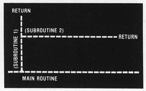
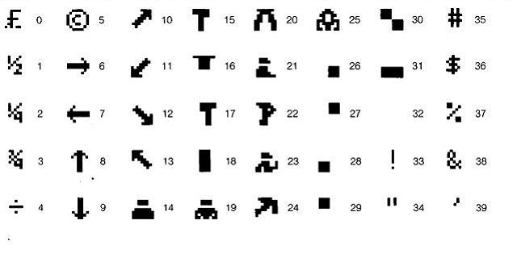

AQUARIUS GUIDE TO HOME COMPUTING
All you need to know about using your Aquarius Home Computer System
(C) 1983, Radofin Electronics (Far East) Ltd. PRINTED IN HONG KONG. All Rights Reserved 5931-0038R-1
Your Aquarius is designed to operate within the locality in which it was purchased.
Because of local receiver requirements, your computer is tailored to operate on one only of the following television channel designations.
VHF O or I (switch selected)
VHF A or B (switch selected)
VHF 3 or 4 (switch selected)
UHF 36 (U.K. or South Africa)
In VHF models, a selector switch can be found on the rear of Aquarius to allow selection of an unused channel in your area.
* It should also be noted that operation of Aquarius should not be done simultaneously while using any form of TV video game as serious interference may result.
Country TV System Voltage TV Channel
-----------------------------------------------------------------------------
United Kingdom PAL I 240 E-36
Canada NTSC 110 3 or 4
Germany PAL B 220 E3 or E4
Italy PAL B 220 A or B
France SECAM 220 E-36
Scandinavia PAL B 220 E3 or E4
Benelux PAL B 220 E3 or E4
Switzerland PAL B 220 E3 or E4
Austria PAL B 220 E3 or E4
Spain PAL B 220 E3 or E4
South Africa PAL I 220 E-36
Australia PAL B 240/250 0 or 1
Japan NTSC 100 1 or 2
KEY POINTS FOR TROUBLE FREE USE OF YOUR AQUARIUS HOME COMPUTER SYSTEM
1. Place Aquarius on a flat, sturdy surface, so the air vents on the bottom can do their job. Do not place ON CARPETED SURFACES.
2. Keep fingers out of the open end of the program cartridges and cartridge port(s).
3 Never lift Aquarius by any external wires, or by the Mini Expander, or its hand controllers.
4. Protect both program cartridges and Aquarius from excessive heat.
5. Always insert cartridge port dust cover when port is not in use.
6. Turn Aquarius OFF and disconnect from mains when not in use. NEW PRODUCT NEWS
4 COLOR PRINTER
Features
-Selectable blue, red, green, and black printing.
-Exchangeable color pen.
-Selectable 40 or 80 column printing.
-12 characters/second print rate.
-256 characters including upper and lower case letters and graphics.
-Directly connect to Aquarius printer interface.
QD FLOPPY DISK DRIVE
Features
-Built-in AQ-DOS.
-Connection up to 2 drives.
-102.4K bytes formatted per drive.
-Maximum 80 files per diskette.
-Data Rate 101.5625K Baud.
-Access time 2-8 sec. (max)
INTRODUCTION AQUARIUS GUIDE TO HOME COMPUTING
Dear User:
That’s you, the proud, new owner of an AQAURIUS home computer. Congratulations on a purchase that may prove to be the most valuable tool you ever buy. Because AQUARIUS is one of the most versatile tools you can buy. Once you learn how to communicate with it, you can use AQUARIUS to expand and enrich many areas of your life: business, play, home management, education...and you can play great games with it as well!
If there are children in your home, you may have to schedule in time on your computer. Experience has shown that children take to computers like bears take to honey. Don’t worry, Aquarius is sturdy enough to take on child programmers, as well as their adult counterparts.
If the AQUARIUS computer is your first computer, you’re in for a pleasant surprise. YOU DON’T NEED A MATH DEGREE to program a computer. The AQUARIUS computer is easy to use. In a short time you can be off and running, writing your own computer programs in the BASIC language. A few hours will acquaint you with the essential commands you need. And it’s FUN. What a feeling of satisfaction comes with running your first successful program. It’s enough to make an old programmer envious!
So relax, follow the easy hook-up instructions, then prop this book beside you and let it guide you through a fascinating new world. When you see examples or experiments, type them in and run them to see how they work.
Keep an eye out for special “road signs" in this book. They point to tips and facts that will make your computer experience smoother and more enjoyable.
Finally, wherever your computer takes you, have a great time!
-------------------------------------
Model No.__________________________
Serial No._________________________
-------------------------------------
-------------------------------------
NOTICE- PROJECTION TV OWNERS
Some stationary game patterns produced by this product may be permanently imprinted on Projection TV tubes by extended use at high brightness levels. Consult Projection TV Owner’s manual before use of this product.
TABLE OF CONTENTS
INTRODUCTION "Quick Tour of the Aquarius Computer"
Hook-Up Without Hang-Ups
CHAPTER 1 “GETTING YOUR FEET WET"
Modes
RTN - The Action Key
Playing With Immediate Mode
Arithmetic
RUN
NEW
CONT
LIST
CTL - The Shortcut Key
Playing With Programmed Mode
More About Line Numbers
Back To The PRINT Command
How To Edit
CHAPTER 2 “DIVING IN"
Constants
Variables
Reserved Words List
INPUT - The Interactive Instruction
LET
Punctuation
CHAPTER 3 “CASSETTE COMMANDS - CSAVE & CLOAD"
Saving Programs
Loading Programs
Verify
Saving and Loading Arrays
CHAPTER 4 “BRANCHING OUT"
GOTO - The One-Way Ticket
IF...THEN - The Truth Detector
Relational and Logical Expressions
CHAPTER 5 “LOOPS THAT COUNT"
The Long Way Around
FOR...NEXT Loops
One Step At A Time
The Nesting Instinct
“Digital Clock" - Our First Real Program
CHAPTER 6 “A SPLASH OF COLOR"
POKE
Character RAM Matrix/Color RAM matrix
Number Relationships On The Matrix
PEEK
Drawing Lines
The Fine Line - PSET
PRESET
POINT
CHAPTER 7 “SUBROUTINES - THE ROUND TRIP TICKET"
GOSUB
RETURN
REMARK - Notes To Yourself
Nesting Subroutines
Computed GOTO and GOSUB
Sound
CHAPTER 8 “READ...DATA - THE EFFINCIENCY EXPERTS"
READ
DATA
Out Of Data
The Flag
Restore
CHAPTER 9 “MAXIMUM STORAGE WITH ARRAYS"
Intro
The Size Of An Array
Changing Dimensions - The CLEAR Statement
Assigning Values To An Array
Multi-Dimensions
CHAPTER 10 “FUNCTIONS - THE SUPER SHORTCUTS"
Intro To Functions
Different Kinds of Functions
Nested Functions
Random Numbers - Games of Chance
CHR$ - The Multi-Function Function
Other Handy Functions - FRE
LEFT$
MID$
RIGHT$
CHAPTER 11 “DIGITAL CLOCK"
REFERENCE SECTION
APPENDIX
PRACTICE PROGRAMS
QUICK TOUR OF THE AQUARIUS COMPUTER SYSTEM
INPUT/OUTPUT DEVICES

HOOK-UP WITHOUT HANG-UPS
Carefully unpack your computer. Check to make sure that you have all these parts:
Computer
Power Cord with attached transformer
Television Hook-Up Cable (10 foot)
Antenna Switch Box
(See illustration of these parts on page 4.)
BEFORE YOU CONTINUE...
Take a minute to check the bottom of the computer. You will see two number - a model number and a serial number. Jot these numbers down on page 2 of this section in the spaces provided
FIND A PLACE FOR YOUR COMPUTER TO LIVE. look for a flat, sturdy surface, so the air vents on the bottom of your computer can do their job. Computers prefer a temperate climate. Avoid placing it near a heating or air conditioning source. The TV connecting cable is 10 feet long, so position your computer within that distance, near a “standard" wall outlet. Be sure the AC plug has been properly installed.
CONNECT YOUR COMPUTER TO YOUR TV SET. Plug the TV connecting cable into the computer and the antenna switch box, as shown.
The antenna switch box allows you to use your TV screen as the video monitor for your computer. To connect the two, you will need a screwdriver (flat head and/or phillips head, depending on your TV set). Follow the illustrations on the next page.
SPECIAL HOOK-UP INFORMATION
Some newer televisions have a separate input port for a cable television. AQUARIUS can be hooked up directly to this port with the use of a standard “Balun" converter (available at most electronics stores).
If you own a video game, you can hook up the video game along with your AQUARIUS computer to the same television set, with the use of a video switch, also available at most electronics stores, or at Radio Shack (catalog number 15-1254).
NOTE: NO CHANGE TO YOUR UHF ANTENNA CONNECTION IS REQUIRED FOR EITHER TYPE OF INSTALLATION.
If applicable, find the Channel 3/Channel 4 selector switch on the back of your computer. Set it to whichever channel has the weaker reception in your area. (Use a small screwdriver or the tip of a ball point pen, as the switch is recessed.) When you use your computer, refer to inside front cover chart for channel selection appropriate to your location.
If you disregard any of the following rules you may cause interference to nearby television sets.
HELPFUL HINTS ON INTERFERENCE
-Never attach loose wires to your antenna terminals when you are using your computer.
-The Antenna Switch Box comes with its own twin lead wire. Never substitute a longer twin lead wire from the Antenna Switch Box to your television set.
-Do not attach the twin lead wire from the Antenna Switch Box to any television antenna or cable-TV outlet.
Your Aquarius home computer comes with a plastic overlay that fits over the keyboard. This overlay is your guide to keys that will print entire BASIC words when these keys are pressed TOGETHER WITH the CTL key. The BASIC word is printed on the overlay ABOVE the key to be used with the CTL key. Details on how these keys work is on page 5 of chapter 1.
IF YOU ARE USING YOUR AQUARIUS COMPUTER WITH A PRINTER, CONNECT THE PRINTER TO YOUR COMPUTER FOLLOWING THE DIRECTIONS THAT CAME WITH YOUR PRINTER.
READY TO POWER UP!
-Plug your Aquarius computer into a standard AC wall outlet.
-Set the Antenna Switch Box at COMPUTER.
-Turn your television set on.
-Turn your Aquarius computer on. In a few seconds you will see this display.
The screen color will change during this display. Tune your TV set for color, clarity and sharpness. Then press the [RTN] (Return) key. The display will change to:
TURNING YOUR AQUARIUS COMPUTER OFF
First turn your TV set off.
Then turn the Aquarius off.
Restore Antenna Switch Box to TV position (otherwise normal reception will be very weak or noisy).
If you turn your Aquarius computer off before you turn your TV set off, the TV acts as though you are getting very poor reception. A picture may or may not be visible on the screen. If the sound is turned up, you will hear a loud hissing noise. You didn’t do anything harmful to your TV. Simply turn your TV set off.
COMPUTER TALK
Nobody wants to read a dictionary. But these key words will help you get a handle on some concepts you’ll be dealing with as you learn to use your computer. Other key words will be explained at the end of each chapter in this book. Get acquainted with them...you’ll be doing yourself a favor.
DATA. Another word for INFORMATION. It’s WHAT YOU WORK WITH when you write a program. Some data is permanently stored in the computer’s memory. Most data is supplied by you.
EXECUTE. Another way of saying “perform" or “carry out". We speak of executing a command.
RUN. A command that tells the computer to execute the instructions in a program.
INPUT. As a verb, it is the process of entering data into the computer, using the keyboard. As a noun, it is data which is entered into memory.
OUTPUT. As a verb, it is the process of giving out data from the computer. As a noun, it is data from the computer, given in any form (printed on paper, displayed on a TV screen, etc.).
RAM (Random Access Memory). The computer’s “working memory". You temporarily store a program in RAM when you write, edit or run the program. But RAM is not forever. When you turn your computer off, data stored in RAM is erased. The length of program you can run is determined by the amount of RAM available in your computer. (You have 1781 bytes available. More on this on page 9 of Chapter 10.)
ROM (Read Only Memory). The computer’s “permanent memory". You can not erase or edit data stored in ROM. You can only instruct the computer to READ data in ROM and manipulate it. Most of the computer’s internal operating instructions are stored in ROM.
CHAPTER 1 “GETTING YOU FEET WET"
(Modes, Arithmetic, RTN Key, RUN, NEW, CONT, LIST, PRINT, CTL Key, Editing Features)
The Aquarius is set up and ready for you to program in BASIC. BASIC is what we call a “high-level" language. This means that BASIC commands more closely resemble the language we speak than they do the language the computer “speaks". This makes BASIC an easy language for people to use. (Though the computer needs its own built-in interpreter.
BASIC has a total “vocabulary" of about 60 words and a few symbols. The words, which are called KEYWORDS, are all defined in the reference section of this book. The words you will use most often are explained in detail throughout the next 9 chapters. We will start with fundamental concepts and simple keywords and build from there.
Is your computer “powered up" (turned on) and ready to go? If not, flip back to page 8 in the Introduction Section and follow the steps to display this screen:
Pay particular attention to the objects labeled PROMPT and CURSOR. You will be seeing them quite often.
KEY IDEAS
The word Ok is the PROMPT. This appears whenever the Aquarius is ready to receive your instructions.
The black square is the CURSOR. It marks the next position on the screen where a letter, number, symbol or space will appear when you press a key on the keyboard. The cursor helps you keep track of “where you are" on the screen.
MODES
You can use your Aquarius Computer in two different ways, or MODES. In one mode, Aquarius responds immediately to each instruction you type, as soon as you press the RTN key. For this reason, it is called the IMMEDIATE Mode. (Some people call it the Direct Mode.)
In the second mode, Aquarius is a little more patient. It lets you enter entire lists of instructions and does not execute them until you tell it to do so. These lists of instructions are what we call “programs", so this mode is called the PROGRAMMED Mode. (Of course!)
There are other differences between Immediate and Programmed Modes. For example, instructions are called COMMANS in Immediate Mode and are not numbered. Instructions are called STATEMENTS in Programmed Mode and are
numbered. These LINE NUMBERS let the computer know which mode you are in and are very important. We’ll explain them in detail later in the chapter.
RTN — THE ACTION KEY!
The [RTN] key is the key that makes things happen. (RTN is short for Return.) In Immediate Mode, it tells Aquarius to execute the command you just gave. In Programmed Mode, it tell Aquarius to store the statement you just typed, so that it can be executed when you are finished writing your program. IF YOU DON’T PRESS THE [RTN] KEY AFTER TYPING IN EVERY COMMAND OR STATEMENT, NOTHING WILL HAPPEN.
The [RTN] key also sends the cursor to the beginning of the next line, so you’re ready to type your next command or statement.
Key [8] is also marked RETURN on the overlay, but this is another animal altogether. Don’t confuse the two keys or you will end up confusing yourself. PLAYING WITH IMMEDIATE MODE
Type in this line:
PRINT_"HELLO"
BY THE WAY
The symbol _ means SPACE. When you see this symbol, press the SPACE key. We will only use this symbol when there is an important reason to include a space.
Now press the [RTN] key to enter the command. Did Aquarius print HELLO?
Press [RTN] again to drop down another line. Then type this: PRINT 2+4 and press RTN. Did Aquarius print 6?
Try another one. Type: PRINT 5*3 and press [RTN]. Aquarius should have printed 15. Surprised? Maybe you didn’t recognize the asterisk (*) as a multiplication sign.
-----------------------------------------------------------------------------
ARITHMETIC KEYS
In BASIC we use these keys to do arithmetic operations.
-----------------------------------------------------------------------------
+
= (UPPER CASE) to add Example: 2 + 2
-----------------------------------------------------------------------------
_
- (lower case) to subtract Example: 16 - 12
-----------------------------------------------------------------------------
*
: (UPPER CASE) to multiply Example: 5 * 8
-----------------------------------------------------------------------------
^
/ (lower case) To divide Example: 20 / 4
-----------------------------------------------------------------------------
You can also EXPONENTIATE (raise a number to a power) with the ^ symbol. Example: * ^ 2 = 8 to the second power (or 8 squared) = 64.
-----------------------------------------------------------------------------
BY THE WAY
YOU CANNOT DIVIDE BY 0
ARITHMETIC OPERATIONS - WHICH COMES FIRST?
If you combine more than one arithmetic operation in the same expression (example: 5 + 16 / 4), which operation does the computer do first? Does it add 5 + 16, then divide the result by 4? Or does it divide 16 by 4 and add 5 to the result? The order of precedence makes a difference in the answer.
Here’s how your Aquarius Computer deals with the question. It scans the expression from left to right, looking for arithmetic operations in this order: Parentheses Exponentiation Negation (giving a number a negative value, like -5) Multiplication and division Addition and subtraction
Example 1: 5 * 6 + 4 / 2
Aquarius first multiplies 5 * 6, then divides 4 by 2. It then adds the results of these operations (30 + 2) for a final result of 32. This is a different result than if Aquarius had multiplied 5 * 6, then added 4 and divided that result by 2, for a final answer of 17.
Example 2: 5 * (6 + 4) / 25
Aquarius first adds 6 + 4 (because this operation is in parentheses). Then it multiplies the result (10) by 5 and divides that result (50) by 25. The final answer is 2.
The order in which Aquarius does arithmetic operations is called OPERATOR PRECEDENCE. For more information on operator precedence, see page 11 in the Appendix.
There are other kinds of expressions, too, called RELATIONAL and LOGICAL expressions. These are discussed in a later chapter.
NOTES ABOUT NUMBERS.
When you use numbers in BASIC, they cannot contain commas or special characters, like the dollar sign.
NO YES
$1,250.75 1250.75
CONTROL — THE SHORTCUT KEY
The key marked CTL is called the CONTROL key. When used with another key, it allows us to take shortcuts in writing many keywords. To use the [CTL] key, always HOLD IT DOWN while pressing the other key - the same way you use the SHIFT key to type upper case characters. RUN and LIST are examples of keywords that can be “written" using the [CTL] key with another key. Almost every key on the keyboard can be combined with the [CTL] key to instantly “write" a keyword or do editing functions. Pretty handy, huh? These keys are all marked on the keyboard overlay.
There is a list of CTL shortcuts for the keywords and editing functions you learn in each chapter. These lists are at the end of each chapter.
When a key is to be used with the [CTL] key, the combination is written as CTL-(key). FOR EXAMPLE, CTL-C “MANUALLY" HALTS A PROGRAM THAT IS RUNNING. (This key is marked STOP on the overlay.) RUN, NEW, CONT, LIST
The most frequently used commands in Immediate Mode are those that tell the computer to do something with a PROGRAM. Some of these are:
RUN - Tells Aquarius to EXECUTE the instructions in a program. Type RUN and press[RTN]. Or press [CTL]-[1] and then [RTN].
NEW - Tells Aquarius to ERASE a program from memory. Type NEW and press [RTN]. There is no control shortcut for this command.
CONT - CONT means CONTINUE. It tells Aquarius to resume executing the program after it has been halted by a STOP statement in the program. (See pages 12 and 13 in the Reference Section for details.) There is no CTL shortcut for this command.
LIST - Tells the computer to PRINT A LIST of the instructions in a program. Type LIST and press [RTN]. Or press [CTL]-[2] and then [RTN].
There are two different ways to list a program:
-Type LIST only. Aquarius will print your entire program, one screenful at a time. When the screen fills up, listing will stop. To see the next screenful, press any key except [CTL], [SHIFT], or [RST].
-Type LIST and a line number. Aquarius will print your entire program, beginning with that line number, one screenful at a time. To see the next screenful, press any key except [CTL], [SHIFT], or [RST].
-To STOP LISTING when you reach a line you want to change, press [CTL]-[C]. This will temporarily take you out of LIST, so you can edit. (See How To Edit, page 10.) To continue listing, when you are finished editing, type LIST and press [RTN]. THE RESET KEY [RST]
When you press the RST (short for Reset) key, you go back to the first screen display you saw when you turned your Aquarius on. On this screen is the instruction:
If you press the RTN key after pressing RST, you will see the screen display with the copyright notice. EVERYTHING STORED IN MEMORY (RAM) WILL BE ERASED. If you have a program in RAM, it will be erased. In computer talk, this is called a “cold start".
There is also something called a “warm start", which allows you to use the RST key WITHOUT erasing the memory. Simply press the [CTL]-[C] (the STOP key) after [RST], instead of the RTN key. A “warm start" is important in two situations: 1. You pressed the RST key by mistake. 2. Your computer experienced a “system crash". This means that Aquarius overloaded - it had a “nervous breakdown". If a program is running, it stops. No key on the keyboard works...except RST.
When you press CTL-C (STOP) instead of RTN, for a “warm start", you see a Break message, such as:
Your stored Program and the variables in that program are still in RAM. Any variables you had used in Immediate Mode are erased. After a “warm start", enter the RUN command to begin running your program again, from the start. PLAYING WITH PROGRAMMED MODE
Let’s start with a clear slate. Press the [RST] key, then the [RTN] key. This will take you back to the copyright notice that you started with when you turned your computer on. There are other ways to clear the screen, but this is the simplest way for now. (Note: This erases the screen AND anything stored in memory.)
Type these statements, exactly as you see them here:
10 PRINT “HELLO" (and press [RTN])
20 PRINT 2+4 (and press [RTN])
You do not have to type keywords (like PRINT) in upper case letters. Aquarius automatically stores keywords in upper case letters, no matter how you type them. You will see this when you LIST your program.
ALWAYS PRESS [RTN] AT THE END OF EVERY STATEMENT YOU TYPE. Remember that individual statements in Programmed Mode are NOT executed when you press [RTN]. The secret is in the line numbers. They tell Aquarius to store those statements in its memory, until you are ready to RUN them as a program.
Try it! Type RUN and press [RTN]. You should see this:
Now type LIST and press [RTN]. Aquarius will print your statements 10 and 20, just as you originally typed them.
Our little program is good practice, but not really worth saving. So type NEW and press [RTN]. This erases the program from the computer’s memory. It does NOT erase the screen.
Notice how you are switching back and forth between Immediate and Programmed Modes. When you type statements with line numbers, you are in Programmed Mode. When you type RUN to execute those statements (or LIST or NEW), you are in Immediate Mode. MORE ABOUT LINE NUMBERS
Just a few simple rules...
1. Whole numbers (integers) only. Not 10.5 or 10 1/4.
2. Positive numbers only. Not -10.
3. Numerals only. Not 10A.
4. Largest possible line number - 65529. 66000 is too large.
If you try to enter a statement with an invalid line number, you will get a SYNTAX ERROR (SN ERROR) message. This means, “you goofed - try again". (There is a complete list of all error messages, starting on page 1 of the Appendix.)
If you try to enter a line number that is too large, Aquarius will chop off digits, working from right to left, until it cuts your line number down to a size it can handle. This process is called TRUNCATING. Example: 66,000 would become 6600. And you would still get the error message. What’s more, if you already had a line 6600 in your program, the new line 6600 would REPLACE the old line 6600. And that could mean big trouble.
GOOD HABITS
As a general rule, leave gaps of at least 10 between line numbers.
Example: 10 PRINT “HELLO" 20 PRINT “MY NAME IS..."
Then if you need to add statements in later, you can do so without renumbering. BACK TO PRINT
What have you noticed about the keyword PRINT? So far we have seen it followed by either:
-Characters enclosed in quotes (called LITERALS)...
-An equation (the = sign is understood) NOT enclosed in quotes...PRINT 2+5
PRINT can also be followed by VARIABLES (which you will learn about in Chapter 2) or a combination of literals, equations, and variables...PRINT A+B.
When the PRINT command is followed by LITERALS, Aquarius prints EVERYTHING inside the quotes, exactly as it is typed.
When the PRINT command is followed by an EQUATION, Aquarius prints only the RESULT of the equation. (When Aquarius prints numbers, it prints a - sign in front of negative numbers and leaves a blank space in front of positive numbers.)
What happens if you forget the quotes around a literal?
Your Aquarius quickly informs you of your mistake by printing SN ERROR. (Syntax Error...remember?)
Or what if you place quotes around an equation? Try it and see. Type: PRINT “2*5" and press [RTN]. This time you don’t get the error message, but you don’t get the result of your equation either. To get the best of both worlds, combine literals and equations with a SEMI-COLON.
Type this:
PRINT “2*5=";2*5
When you press [RTN], Aquarius will print:
2*5=10.
ANOTHER ALTERNATIVE: If you type PRINT “2" + “5" and press [RTN], Aquarius will print these TWO LITERALS next to each other. (This is called CONCATENATION.) The result will be 25. If you place quotes around only ONE number in an equation (PRINT “2" + 5), Aquarius will get totally confused and give you a TM Error message (TM means Type Mismatch - you tried to mix apples and oranges.)
BY THE WAY
AN ABBREVIATION FOR THE PRINT COMMAND IS THE QUESTION MARK (?).
EXAMPLE: ? “HELLO" or ? 2*5
KEY IDEAS
Computers are fast, but unimaginative. They only do EXACTLY what you tell them to do. In general, every quote, comma, semi-colon, etc. has a very specific meaning. If you substitute one for another, you change the meaning of your command or statement.
Spaces are a little different. Sometimes they have a specific meaning. Most of the time though, they serve their “normal" function - to make a line more READABLE. The computer usually does not view them as necessary. For example, you can type: 10PRINT"2*5=";2*5 and you will still see 2*5=10 when you run the program.
HOW TO EDIT
LINE LENGTH Think of the screen as 40 columns across by 24 rows down.
Normally you can type characters in columns 1 through 38.
Aquarius usually reserves columns 0 and 39 as margins.
If you type a character or space in column 38, the cursor will automatically return to column 1 on the next line. THIS IS NOT THE SAME AS PRESSING THE [RTN] KEY, though the immediate result may look the same. YOU MUST STILL PRESS [RTN] TO ENTER YOUR COMMAND OR STATEMENT. Otherwise the computer will treat the second line as a continuation of the first line.
There may be times when you WANT this to happen (if you have a statement that won’t fit on one line, for example). In this case, you can type UP TO AND INCLUDING COLUMN 34 on the second line, before pressing [RTN]. This makes a total of 72 characters - the MAXIMUM LINE LENGTH. When you have typed 72 characters (including spaces), Aquarius will BUZZ and refuse to print any further characters until you press [RTN].
(Pressing [RTN], of course, ends your statement.)
If you want to continue a PRINT statement over 2 lines, you may need to break it up in a special way, to make it READABLE when it is run.
TYPE THESE LINES EXACTLY AS YOU SEE THEM HERE:
10 PRINT “FORESCORE AND SEVEN YEARS"; PRESS [RTN]
20 PRINT “_AGO, OUR..." PRESS [RTN]
Don’t forget the SEMI-COLON at the end of Line 10. (More on punctuation use in Chapter 2.)
Now RUN this program. Notice that the computer types “ago" right after “years". This happens because you placed the SEMI-COLON at the end of your literal (“Forescore and seven years") on line 10. The space between years and ago appears because you typed a space before “ago" in line 20. You could also have typed the space AFTER “years" in line 10.
DELETE CHARACTERS
In BOTH Immediate and Programmed Modes, you can erase all or part of a line BEFORE YOU PRESS [RTN]. You do this by pressing the [left arrow] key. Each time you press this key, the cursor backs up one space, erasing the character over which it passes. (CTL-H does the same thing.)
TYPE: PRINT HELLO...then press [left arrow] twice, to see how it works.
If you want to make a change AFTER you press [RTN], simply re-type the line. In Programmed Mode, TYPE THE LINE NUMBER TOO. You can re-type a program statement anywhere on the screen. The new statement will replace the old statement, as long as both have the same line number.
DELETE PROGRAM LINE
In Programmed Mode, you can delete an entire line BEFORE you press [RTN].
Use the control shortcut, [CTL]-[X]. (This key is marked DELINE on the overlay.) A # sign will appear at the end of the line and the line will be deleted, as you will notice when you LIST or RUN your program.
To delete a line AFTER you press [RTN], just type the line number and press [RTN]. See example on next page.
10 PRINT “HELLO AQUARIUS" You type in these 3 statements
20 PRINT “SOLVE THIS." Remember to press [RTN] after
30 PRINT “2*5=";2*5 each statement.
20 [RTN] Now you type the line number 20 and press [RTN].
LIST Enter LIST to display your program.
10 PRINT “HELLO AQUARIUS" Notice that Line 20 is gone!
30 PRINT “2*5=";2*5
ADD A PROGRAM LINE
In Programmed Mode, you can add statements to a program in any order, at any time. The LINE NUMBER determines the order in which a statement appears in your program.
For example, suppose that you wanted to add a PRINT statement between Lines 10 and 20 in this program.
TYPE:
10 PRINT “HELLO" You enter a 4-statement
20 PRINT “PLEASE SOLVE" program.
30 PRINT “THIS EQUATION" Remember to press [RTN] after
40 PRINT “2*12=";2*12 each statement.
15 PRINT “AQUARIUS" You pick a line number between 10 and 20. The line number must not already exist in your program. If you use an existing line number, your new statement will replace an existing statement. After typing in your new line number, you type in the statement. You enter the LIST command to display your revised program.
10 PRINT “HELLO" In your new program, Line 15 is
15 PRINT “AQUARIUS" properly placed between Lines
20 PRINT “PLEASE SOLVE" 10 and 20.
30 PRINT “THIS EQUATION"
40 PRINT “2*12=";2*12
CLEAR SCREEN (CHR$)
Earlier you learned that you can clear the screen and erase memory by pressing [RST], then [RTN]. What if you want to clear the screen WITHOUT erasing the memory? Type this command:
PRINT CHR$(11) or
?CHR$(11)
NOTE: The QUESTION MARK is short for PRINT. CTL-(Space key) is the shortcut for CHR$. The space key is marked CHR$ on the overlay. (Of course, you still have to type PRINT or ? before CHR$ and press [RTN] after it.)
When you press [RTN], the screen will clear and the cursor will return to the HOME POSITION (upper left corner of the screen).
PRINT CHR$(11) can be used to clear the screen in either Immediate or Programmed Mode, type it as you would any numbered statement. When the program reaches that statement, it will clear the screen and continue the program.
CHR$ is an example of a computer function. Functions are explained later in the book. Don’t worry about understanding this function now. It’s okay to just use it for the time being.
COMPUTER TALK
COMMAND. An instruction without line numbers used in Immediate Mode.
CONCATENATION. The act of joining things together.
CURSOR. A pointer (in our case, a black square) that marks the next screen position in which you can type a character or space.
EXPONENTIATION. The process of raising a number to a power, that is, multiplying it by itself a number of times.
HOME POSITION. The upper left corner of the screen.
INTEGER. A whole number.
INTERPRETER. A device that “translates" your BASIC commands into the machine language that the computer understands.
LINE NUMBER. Any positive integer preceding a statement in Programmed Mode.
LITERAL. Anything enclosed in quotation marks that is to be printed exactly as typed.
MODE. A way of doing things.
PROMPT. Character(s) that tells you the computer is ready for your input. Aquarius uses OK as its prompt.
STATEMENT. An instruction with line number, used in Programmed Mode.
TRUNCATION. The act of shortening a number or string of characters by dropping numbers or characters, starting from the right.
CONTROL SHORTCUT
CHR$...[CTL]-[SPACE]
LIST...[CTL]-[2] (and press [RTN])
RUN...[CTL]-[1] (and press [RTN]
Delete program line...[CTL]-[X] (marked DELINE on overlay)
Delete character...[CTL]-[H]
Halt program execution...[CTL]-[C] (marked STOP on overlay)
CHAPTER 2 “DIVING IN"
(Constants, Variables, INPUT, LET, Reserved Words, Punctuation)
When you write a program, you give Aquarius instructions (statements or commands) that tell it to do something with data. (Remember data? That’s our word for information.)
Before we look at any more instructions, let’s look at the different kinds of data we can have. Data can be:
1. CONSTANT information which DOES NOT CHANGE from the way you write it.
2. VARIABLE information which YOU OR THE COMPUTER CAN CHANGE when the program is run.
Either kind of data can consist of NUMBERS ONLY or a COMBINATION of numbers, letters, spaces and special characters. Data that consist of numbers only are called NUMERIC DATA. Data that COMBINE letters, numbers, etc. are called STRING DATA. So we end up with four different kinds of data: NUMERIC CONSTANTS, STRING CONSTANTS, NUMERIC VARIABLES and STRING VARIABLES. CONSTANTS
NUMERIC CONSTANTS
In Chapter 1, when we used the PRINT instruction, we used it with both numeric and string constants. When we did ARITHMETIC OPERATIONS we used NUMERIC CONSTANTS. Example: PRINT 2+5. 2 and 5 are both numeric constants. ONLY NUMERIC constants or variables can be used in arithmetic operations. Numeric Constants 545 (an integer) -17 (a negative number) 29.45 (a decimal number. Can also be negative.) 32E06 (a number larger than 999999, expressed in scientific notation. This is scientific notation for 3200000.) 9E-03 (a number smaller than .01 expressed in scientific notation. This is scientific notation for .009.)
STRING CONSTANTS
When we printer LITERALS (characters inside quotation marks) we used STRING CONSTANTS. “Hello Aquarius" is a string constant. “2+5" is also a string constant. When numbers are enclosed in quotation marks, we cannot perform arithmetic operations on them, because they are STRING constants (also called LITERAL STRINGS). If we tell Aquarius to PRINT “2" + “5", it will print the 2 and the 5 next to each other. (Concatenation...remember?) String Constants “545" or “5" + “4" (numbers only) “Hello" (letters only) “Pi=3.14%" (a combination of letters, numbers & special characters.) VARIABLES
If you have a program that works only with constants, you have a program that cannot change when you run it. You cannot interact with a program like this...you can only watch it. A program that doesn’t let you interact is not much of a program.
In order to allow interaction, a program must work with VARIABLES, as well as constants. Think of a variable as an empty box that you can fill with any data you like. Once you store data in the box - we call this ASSIGNING A VALUE to the variable - Aquarius treats that value as a constant until you decide to put a different value in the box. You can put either a numeric value or a string value into the box - but you cannot mix these two kinds of values in the same box.
Once you store a value in a box, you need to LABEL the box, so that you can find (retrieve) that value when you want to use it. String variables have different labels than numeric variables.
NUMERIC VARIABLE NAMES
A...Any single letter
AB...Two letters, if unreserved*
SCORE...A name up to approximately 60 characters in length, if unreserved*. (Aquarius uses only the first two letters, so it would consider this example to be the label SC.)
C5...A combination of a letter and a number. The letter must be the first character.
* SEE NOTE AT TOP OF PAGE 2-3.
STRING VARIABLE NAMES
A$...Any single letter, followed by a dollar sign. (Example: A$ = “Hello".)
NAMES$...Groups of letters up to approximately 60 characters*, followed by a dollar sign. (Aquarius uses only the first two characters and the dollar sign, so it would consider this example as NA$.)
C8$...Any letter and number, followed by a dollar sign. The letter must be the first character.
* Note: The words listed here are all “RESERVED" because they have special significance to the BASIC interpreter. No variable name can include letter combinations that spell one of these words. For example, “BONUS" would not be a valid variable label because it contains the sequence O-N - and that’s a reserved word.
ABS , DIM , LEFT$ , ON , RETURN , STOP , AND , END , LEN , OR , RESTORE , STR$ , ASC , EXP , LET , PEEK , RIGHT$ , TAB , CHR$ , FOR , LIST , POINT , RND , TAN , CLEAR , FRE , LLIST , POKE , RUN , THEN , CLOAD , GOSUB , LOG , POS , SGN , TO , CONT , GOTO , LPRINT , PRESET , SIN , USR , COPY , IF , MID$ , PRINT , SOUND , VAL , COS , INKEY$ , NEW , PSET , SPC , CSAVE , INPUT , NEXT , READ , SQR , DATA , INT , NOT , REM , STEP
(ALL THESE WORDS ARE EXPLAINED IN DETAIL IN THE REFERENCE SECTION. ALL WORDS ABOVE THAT END IN A $ CAN BE USED WITHOUT THE $ AS NAMES FOR NUMERIC VARIABLES.) INPUT - THE INTERACTIVE INSTRUCTION
That’s not as weighty as it sounds. But INPUT is a very important statement, because it lets you use variables to create a program that you can interact with.
INPUT tells Aquarius to STOP RUNNING THE PROGRAM so you can enter (or input) some data with the keys. There are two ways to write an INPUT statement.
10 PRINT “WHAT IS YOUR NAME"; The print statement asks the question. You do not need a question mark after NAME because the INPUT statement in line 20 automatically prints a question mark. The semi-colon at the end of the PRINT statement causes the question mark to appear at the end of line 10.
20 INPUT NA$ The input statement tells the computer to stop and wait for you to answer. Then it stores that answer under the label NA$. The dollar sign at the end of the label tells Aquarius to expect “string" data.
The second way to write an INPUT statement is on one line, without the print statement.
10 INPUT “WHAT IS YOUR NAME";NA$
This is obviously a faster way to write an INPUT statement. Enter and run the short program, “DAYS OLD", to see how the INPUT statement works.
REMINDER
If you make any mistakes before completing a line, move the cursor backward for corrections with the [left arrow]. If you discover an error after you finish the line and pressed [RTN], just type the line again, using the same number.
REMEMBER TO PRESS [RTN] AT THE END OF EVERY PROGRAM LINE! “DAYS OLD"
PROGRAM EXPLANATION
10 INPUT “Hi, what’s your name"; NA$ The words inside quotation marks are constant data, and will be
displayed just as you write them The semicolon separates the
constant part of the statement from the variable part of the
statement. NA$ is a label for your name (the variable you will type
in when the program asks for it). The dollar sign at the end of the
label tells the computer to expect “string" data. Then this data will
get put into a memory location labeled NA$
20 PRINT “How old are you_";NA$ Again, the words between the quotation marks are constant.
Notice the blank space after the “you". It’s needed there to put a
space between the last word of the constant data and the first
letter of the variable data. This line tells the
computer to get the data you stored in the variable NA$ (your
name) out of its memory and PRINT it right after the constant
data.
30 INPUT age This line tells the computer to expect the input of a numeric
variable, which it can use to do arithmetic calculations. Omission
of the dollar sign defines the variable “age" as numbers-only data.
40 PRINT AGE;"! That’s pretty young!" This line tells Aquarius to get the data you stored in the numeric
variable ‘age’ and print it before the constant data.
When you have entered this program, RUN it to see how it works.
LET
The INPUT statement allows you to assign a value to a variable when you RUN a program. The LET statement allows you to assign a value to a variable when you WRITE a program. Then when you run your program and Aquarius reads your LET statement, it automatically assigns the value you chose to the variable you named.
WITH LET: LET A=10 WITHOUT LET: A=10 LET A=2+5 A=2+5 LET A=B+C A=B+C LET A=B A=B LET A=B+5 A=B+5 LET A$="Hello" A$="Hello"
INCORRECT LET A$=5
INCORRECT LET A="Hello"
Notice that the word LET is optional in a LET statement. Also notice that you cannot normally assign a numeric value to a string variable or vice versa.
Once you assign a value to a variable, it keeps that value until you assign a different value or use that variable in an INPUT statement.
Let’s update our “DAYS OLD" program, using the LET statement.
PROGRAM EXPLANATION
10 INPUT “Hi, what’s your name";NA$ The first 3 statements are the same as our previous program. Notice we used the ? instead of
20 ? “How old are you,_";NA$ the word PRINT in line 20.
30 INPUT age
40 LET DAYS=age*365 <-numeric constant The word LET is optional in a LET statement. We could omit it and get the same result. With Line 40 we create another numeric variable (DAYS) which equals the numeric variable age times the constant 365.
50 ? “That’s at least";DAYS;"_days!" Again, a PRINT statement contains both constant and variable data. The second semicolon tells the computer that there is more to be displayed on the same line. The blank space before the literal “days" puts a space between the variable and the constant.
GOOD HABITS
It’s a good idea to LIST your programs, to check for obvious errors.
As you see, the statements INPUT, PRINT and LET are capitalized, as well as the variable names - even if you didn’t type them that way.
Try your program now. Press [CTL]-[1] then [RTN]. You should see the lines shown on the next page.
PROGRAM EXPLANATION
Ok
RUN
Hi, what’s your name? Type your name now. Then PRESS [RTN]
How old are you, (your name)? Type in your age now.
That’s at least (result) days!
Ok
DID YOU HAVE ANY PROBLEMS? Don’t worry - it’s a chance to learn more. If there were any “bug" in your program that kept it from running, you got an Error Message showing the number of the first line the computer encountered that it could not execute. Check the list of Error Message abbreviations on pages 2 and 3 of the Appendix to see what the message means. The process of finding and correcting errors is called “debugging", and it’s an inevitable part of programming. A common cause of errors, even by experienced programmers, is mistyping or omitting punctuation (quotation marks and semicolons in this example).
If your program wouldn’t RUN, press [CTL]-[2] then [RTN] to LIST your program. Doublecheck each punctuation mark. And make sure you were consistent in spelling all the variable names.
When you find an error, just type the whole line again, using the same number. When you press [RTN], your new line replaces the old one.
PUNCTUATION
When your program runs perfectly, do some experimenting to demonstrate the usefulness of other kinds of punctuation. There are three special punctuation marks that you need to be aware of.
SEMI-COLON (;)
- CAN BE USED TO SEPARATE constants and variables in a statement. This use is optional.
Example:
10 PRINT “My name is_";A$;"._What’s yours?"
- Causes a variable or constant to be printed NEXT TO another variable or constant.
Example:
10 PRINT I am your computer._";
20 print “You are my user."
If these statements were executed, Aquarius would print “I am your computer. You are my user." on one line.
COMMA (,)
- SEPARATES variables when more than one variable is used in the same statement.
Example:
10 INPUT A$,B$,C$
- Causes a variable or constant to be printed in the automatic TAB position, which is column 1 or column 15 on a line. If either column is already occupied, the data is printed in the next automatic tab position.
Example:
10 PRINT “Red","Blue","Yellow","Green"
If this statement were executed, Aquarius would print:
COLON (:)
The colon can be used (optionally) to separate statements, allowing you to write more than one program statement on a single line. This is probably the way you will use the colon as you gain experience, but the early examples in this book will show each statement on a different line. (Combined statements are explained in Chapter 5.)
BY THE WAY
Any time a punctuation mark is used INSIDE quotation marks, it is used as a LITERAL character.
COMPUTER TALK
BUG. An error in a program.
CONSTANT. Data that cannot be changed during program run.
DEBUGGING. The process of correcting errors.
LABEL. The “name" under which you store variable data.
LITERAL STRING. Constant data that is enclosed in quotation marks. Also called string constant.
NUMERIC CONSTANT. Constant data that can be used in arithmetic operations. A number.
NUMERIC VARIABLE. A variable whose value can be a number only.
RESERVED WORDS. Words that have special meanings and therefore cannot be used, in whole or part, as variable names.
STRING CONSTANT. Constant data that is enclosed in quotation marks. Also called literal string.
STRING VARIABLE. A variable which can contain letters, symbols and numbers, but which cannot be used in arithmetic operations.
VARIABLE. Data that can be changed by you or the computer during program run.
CONTROL SHORTCUTS
INPUT...[CTL]-[T]
CHAPTER 3 “CASSETTE COMMANDS" (CSAVE & CLOAD)
You are reaching the point where you may want to save the programs you write. Normally, when you press [RST] or turn Aquarius off, your program in RAM is erased. But Aquarius allows you to save programs on magnetic cassette tape, then load those programs into memory when you want to run them again.
Is your cassette recorder hooked up to your computer? If not, turn back to the Introduction Section, page 7, for hook-up instructions. CSAVE - Saving A Program On Cassette
When you enter the CSAVE command, the program currently in memory is recorded on cassette. Use the CSAVE command in Immediate Mode in this way:
1. Type CSAVE (or press [CTL]-[A]), followed by your PROGRAM NAME IN QUOTATION MARKS. Then press [RTN]. (Although your program name may be longer than six characters, Aquarius will only pay attention to the first six.) If you do not give Aquarius a program name, Aquarius will give you an MO Error message.
2. Aquarius will respond with: Press <RECORD> Press RETURN key to start
3. On most cassette recorders, begin recording by SIMULTANEOUSLY PRESSING BOTH THE [RECORD] AND THE [PLAY] KEYS. Then press the [RTN] key on your computer.
4. Wait while Aquarius records your program. While saving is taking place, you may hear your data transfer through your TV speaker, as several short bursts of sound. When the program is saved, Aquarius will respond: Ok
5. Press the [STOP] key on the recorder.
6 VERIFY that your program was correctly CSAVED, following the instructions on pages 3 and 4 of this chapter.
Once you CSAVE a program, it is stored in two places - in RAM and on the cassette tape. To erase it from RAM, type NEW and press [RTN]. When you try to LIST the program, you’ll find that it is gone.
GOOD HABITS
When you save the first program on a cassette, set the counter on the recorder to 0. 0 will be the starting point (also called the LOAD POINT) of your first program. Then as you add programs to the cassette, keep track of the load point of each new program.
When you add a program to a cassette, [FAST FORWARD] past the end of the last program on tape before you [RECORD] your new program. Watch the index counter on your recorder and separate programs by at least 2 numbers on the index counter.
KEEP A LOG for each cassette. Note the NAME and LOAD POINT of each program on a cassette.
USE THE RIGHT KIND OF TAPE. High quality, low noise recording tape (no longer than 60 minutes) will give the best results.
ADJUSTING THE VOLUME
Programs are saved on cassette in a series of low- and high-pitched squeaks. When you use cassette recorders that allow you to set the volume, you must adjust the volume. It must be loud enough that Aquarius can understand what is being recorded. It must not be too loud, however, or distortion may occur.
The proper volume adjustment varies from recorder to recorder. To set the volume on your recorder, try saving a short program a number of times. Each time you save the program, VERIFY it, following the instructions on page 4 of this chapter. If the program does not verify, adjust the volume and try again.
When you find the correct volume settings, make a note of it. Then you will always be able to make the proper volume adjustment after using the recorder for other purposes.
LOADING PROGRAMS
To reverse the CSAVE process and copy the program from the cassette tape to RAM, use the CLOAD command in Immediate Mode.
1. Use the [FAST FORWARD] or [REWIND] key on your recorder to position the tape at the load point for the program.
2 Type CLOAD (or press [CTL]-[Z]) followed by the PROGRAM NAME IN QUOTATION MARKS. Then press [RTN]. (If you do not enter a program name, Aquarius will load the first program it finds.)
3. Aquarius will respond with: Press <PLAY> Press RETURN key to start
4. In practice, it is better to press the [RTN] key on the computer first. Then press the [PLAY] key on your recorder. If you reverse this process, you may miss your load point.
5. Aquarius searches the tape for the program name you entered. When it finds the program, it prints: Found (your program name)
6. After it finds your program, Aquarius automatically loads it into RAM. When loading is completed, Aquarius displays: Ok
7. Press the [STOP] key on your recorder. Your program is now stored in RAM, ready for you to RUN or LIST. (Of course, it is still stored on cassette also.)
8. VERIFY that the program in RAM matches the program on cassette, following the directions on page 4 of this chapter.
BY THE WAY
The CLOAD command automatically gives a NEW command also, which erases everything stored in RAM.
SKIPPING OVER PROGRAMS
If the tape is not positioned at the correct load point for a program, Aquarius will search the entire tape, load point by load point until it finds the program you have named. Each time it reaches a program other than the one you have named, it will stop and display these messages: Skip (program name) Press <PLAY> Press RETURN to start
Aquarius displays the “Skip" message for each program it finds that does not match the program you named when you entered the CLOAD command. The “Skip" message is always followed by directions to press [PLAY] and the [RTN] key. The recorder will continue running, so you do not need to press PLAY. YOU MUST PRESS [RTN] EACH TIME, IN ORDER TO CONTINUE SEARCHING. If you do not press RTN fast enough, you may miss the load point for the next program on tape.
If you miss the load point for a program, rewind the cassette prior to the load point for the program, and press the [PLAY] key on your cassette recorder.
When Aquarius finds the program you named, it will display this message: Found: (program name)
It will then automatically load that program into RAM. When loading is complete, Aquarius will display the Ok prompt. VERIFY - DID IT COPY?
After saving or loading a program, you can VERIFY that the program on cassette matches the program in RAM. Follow these steps:
1. [REWIND] the cassette to the load point for the program you just saved or loaded.
2. TYPE CLOAD? followed by the PROGRAM NAME IN QUOTATION MARKS. Then press [RTN].
DON’T FORGET THE QUESTION MARK AFTER CLOAD! If you leave it off, Aquarius will think you gave the CLOAD command and erase everything stored in RAM (including your original program, if you have just CSAVED).
3. Aquarius will respond: Press <PLAY> Press RETURN key to start
4. In practice, it is better to press the [RTN] key on your computer first. Then press the [PLAY] key on your recorder. If you reverse this process, you may miss your load point. If you miss the load point for your program, Aquarius will not find your program. [REWIND] and try again.
5. When Aquarius finds your program, it will print: Found: (your program name)
If the program on cassette matches the program in RAM, Aquarius will print: Ok. This means your program has verified and you can go on to the next command.
6. If the program on cassette DOES NOT match the program in RAM, Aquarius will print: Bad Ok
The Ok prompts you to enter the next command. It does not mean your program verified. Try saving or loading the program again. Then verify again.
SAVING AND LOADING ARRAYS
You can save large blocks of data in ARRAYS on cassette. (Arrays are explained in Chapter 9.) Then you can load this data into the program currently stored in RAM, into the memory block reserved by the program for that data. Saving and loading arrays is slightly different than saving and loading programs. Here is how to do it.
A NOTE TO THE NOVICE: Until you understand and use arrays, you do not need to understand this section. Skip it, until you need it.
To Save An Array
The array must be a numeric array. The array that you save must be dimensioned by the program of which it is part. Example: 10 DIM A(100)
In Immediate or Programmed Mode, save the data stored in your dimensioned array with the command CSAVE* followed by the array name (A in the example above). DO NOT put quotation marks around an array name. Example: 500 CSAVE*A
When the CSAVE* command is executed, either when you press [RTN] after typing the command or when that program statement is executed, Aquarius will tell you: Press <RECORD> Press RETURN key to start
Press the [RECORD] key on your recorder, then the [RTN] key on your computer. After saving your array, Aquarius will display: Ok.
Press the [STOP] key on your recorder. Be sure to use the index counter on your recorder to keep track of the load point and the end point of your saved array.
To replace an array with a new version, position the tape at the load point for the old version. Be aware that the new version may replace part of the next program or array, if the new version is significantly larger than the old version.
If you want to save both old and new array data, dimension both an input array and an output array, when writing your program. After loading array A from cassette, process the data in the array and save the results in array B on cassette. When the program has ended, your cassette contains both the original data and the revised data.
Example: 10 DIM A(100) 20 DIM B(100) 30 CLOAD*A . 500 CSAVE*B
To Load An Array
The CLOAD* command loads a numeric array into memory from cassette.
You must DIMENSION an array before you can load it into memory. Once you dimension an array, you may load that array and number of times. Each time you enter the CLOAD* command, Aquarius erases the array currently in the memory block reserved for it by you program. (The size of the memory block in your program must match the size of the dimension you give the array.) Then the Aquarius reloads the array from cassette data.
Notice that array names are NOT enclosed in quotation marks in the CLOAD* command.
Before you enter the CLOAD* command, position the tape a little before the array load point. Aquarius skips over arrays whose names do not match the name in the CLOAD* command. If you think that you have missed a load point, [REWIND] the tape and try again.
CLOAD* Example 1: You load array C1 in Immediate Mode.
DIM C1(100) Dimension array C1.
CLOAD*C1 Enter the CLOAD* command.
Press <PLAY> Aquarius tells you to press the
Press RETURN key to start [PLAY] key on your recorder and the [RTN] key on your computer.
[PLAY] Press the [PLAY] key, then
[RTN] IMMEDIATELY press [RTN]. Or press both keys together.
Aquarius does not tell you when it finds the array or whether the array is being loaded into memory. It displays the Ok prompt AFTER the array has been loaded. Press the [STOP] key on your recorder.
CLOAD* Example 2: You load array A in Programmed Mode. Your array is too large to be loaded in a single step. To use the data in the array, you previously saved it in smaller groups. Each group of data has the same array name.
Notice that you dimension array A BEFORE loading the data for the array. After loading the array, you print the data in the array, and load another portion of the array. Each time you load array A, you replace the previous contents of the array in memory.
To effectively use this approach to loading array data, you must accurately position the cassette at the load point for each array.
10 DIM A(100)
20 CLOAD*A
30 FOR I=1 TO 100
40 PRINT A(I);
50 NEXT I
60 GOTO 20
BY THE WAY
The CLOAD* command is NOT used to VERIFY whether an array in memory matches an array on cassette.
CONTROL SHORTCUTS
CSAVE...[CTL]-[A]
CLOAD...[CTL]-[Z]
COMPUTER TALK
LOAD POINT. The start point for a program loaded on cassette tape.
CHAPTER 4 “BRANCHING OUT"
(GOTO, IF...THEN and STOP)
So far the programs we have written have been like the main street of a town. Aquarius goes down this street, step by step, stopping along the way to carry out any instructions that it finds.
But Aquarius can do a lot more than march straight down the street. It can skip ahead or jump back along that street...or go to another street altogether. It can also travel in circles.
All of these abilities are very useful to us in programming and they all come under the general heading of BRANCHING. Whenever you tell Aquarius to stop going straight down the street and go somewhere else, you are giving it a BRANCHING instruction. When you tell Aquarius to travel in circles, you are giving it a special kind a branching instruction, called a LOOPING instruction.
There are two ways to set up any branching instruction (including looping instructions). You can write an UNCONDITIONAL BRANCHING instruction, which is like saying to Aquarius, “Go here, no matter what other conditions exist in my program." Or you can write a CONDITIONAL BRANCHING instruction, which says to Aquarius, “Wait a minute. First check and see if a certain condition exists in my program. If it does, go one place. If it doesn’t, go another place."
In this chapter, we will learn how to use two commands that will let us write branching instructions. They are GOTO and IF...THEN. GOTO - THE ONE-WAY TICKET
GOTO is a BASIC command that does exactly what it sounds like. It tells Aquarius to GO TO some other line. It doesn’t tell Aquarius to come back - GOTO is a one-way ticket. Because Aquarius has to know which line to go to, the command GOTO is followed by a line number.
Example: GOTO 80
This tells Aquarius to go to Line 80 in the program.
GOTO can be used to send Aquarius either forward or backward in a program. One of its most common uses is to send Aquarius BACK in a program to repeat a group of statements over. This is called LOOPING and the group of repeated statements is called the LOOP. Add line 60 below to your “Getting Acquainted" program to see how this works. The program will look like this:
10 INPUT “Hi, what’s your name";NA$
20 ? “How old are you,_";NA$;
30 INPUT age
40 LET DAYS=age*365
50 ? “That’s at least";DAYS;"_days!"
60 GOTO 10
When you run this program, Aquarius will wait after each question until you type in a response and press [RTN]. Then it will print the number of days in your age, go back to the start of the program and run it again. Boring, huh?
This little program is an example of a PERPETUAL LOOP. TO STOP IT PRESS [CTL]-[C]. There are not many instances where a perpetual loop is desirable. You might use it to create a kaleidoscope...or to drive someone crazy with repeating tones. But more often, you will want to put a limit on your loops. One way to limit a loop is with CONDITIONAL branching.
A perpetual loop is an example of UNCONDITIONAL branching. If we make our branching conditional, we give ourselves a way out of a perpetual loop. For this we use a two-part statement, IF...THEN.
IF...THEN (THE TRUTH DETECTOR)
IF...THEN lets Aquarius EVALUATE AN EXPRESSION and CHOOSE A COURSE OF ACTION, depending on whether the expression is true or false.
Example: IF X=10 THEN GOTO 100
X=10 is the expression GOTO 100 is the course of action.
Aquarius checks the value of X. If it finds that X does equal 10, it evaluates the expression as TRUE and executes the statement following the word THEN. In the example above, the statement is GOTO 100. (The word GOTO is usually omitted because it is understood. Example: IF X=10 THEN 100.) However, you can use any valid statement. Example: IF X=10 THEN PRINT “HELLO".
If Aquarius evaluates the expression as FALSE, it branches to the next LINE of the program (NOT the next statement on the same line).
Add lines 60-90 below to your “Getting Acquainted" program, to see how the IF...THEN statement works.
PROGRAM EXPLANATION
10 INPUT “Hi, what’s your name";NA$
20 ? “How old are you,_";NA$;
30 INPUT age
40 LET DAYS=age*365
50 ? “That’s at least";DAYS;"_days!"
60 ? “Anyone else (y=yes)?" New line 60 calls for the letter y to be typed if the answer is yes.
70 INPUT P$
80 IF P$="y" THEN 10 Branches back to line 10 IF P$ ="y". Quotes around define it as a literal, rather than a variable.
90 END If P$ is any literal other than “y" the program ends.
The expression that Aquarius evaluates in an IF...THEN instruction may be a NUMBER OR ARITHMETIC EXPRESSION. If it is, Aquarius looks at the TRUTH VALUE of a number or expression. If the value is 0, the expression is judged FALSE. If it is NOT 0, it is judged TRUE. You can file this information away for future reference, because it is not the kind of expression that you will normally use.
The evaluated expression is usually a RELATIONAL or LOGICAL EXPRESSION. RELATIONAL AND LOGICAL EXPRESSIONS! WHAT ARE THEY?
Nothing to get scared about. Just take a moment to get familiar with them.
RELATIONAL EXPRESSIONS compare values and show the relationship between them. Call one value X and the other value Y. These are the relationships that can exist between X and Y. X equals Y (X=Y)* X is greater than Y (X>Y)* X is less than Y (Y<Y)*
*THE SHORTHAND EXPRESSION
Equals (=), greater than (>) and less than (<) are RELATIONAL OPERATORS. Relational operators can be combined like this: X is less than or greater than Y (X<>Y). Also means X does not equal Y. X is equal to or greater than Y (X>=Y). Also means X is NOT less than Y. X is equal to or less than Y (X<=Y). Also means X is NOT greater than Y.
These are the keys you use to type relational operators.
[<] LESS THAN
[>] GREATER THAN
[=] EQUALS
[<] and [>] LESS THAN OR GREATER THAN
[<] and [=] LESS THAN OR EQUAL TO
[>] and [=] GREATER THAN OR EQUAL TO
If Aquarius has to make more than one comparison in an expression, it makes the comparisons in order, from left to right.
Example: If Aquarius reads X=Y>Z, it will look at whether X and Y are equal, then whether X and Y are both greater than Z.
If Aquarius has both arithmetic and relational operations to deal with in the same expression, it will perform the arithmetic operations first and evaluate the relationship second. Example: A+B=C+D.
LOGICAL EXPRESSIONS
If more than one relational expression has to be evaluated as true or false, they are combined in a LOGICAL expression by the words AND or OR.
IF A>B OR C=D Means if EITHER relational expression is true, the entire logical expression is true. OR is the “logical operator".
IF A>B AND C=D Means if BOTH relational expressions are true, the entire logical expression is true. AND is the “logical operator".
The word NOT is also a logical operator. It is used to reverse the true/false value of a constant, variable or the result of evaluating a relational expression. Example: NOT A
The order in which Aquarius checks logical operators is: NOT AND OR
If Aquarius runs across a COMBINATION of arithmetic, relational AND logical expressions, it evaluates them in that order. END/STOP
Notice the new use of an END statement in our program. END is just a way of telling Aquarius to halt execution of a program. If there is no branching in a program, the END statement is unnecessary. With more complicated programs, however, Aquarius doesn’t have an automatic stopping point. So we add in the end statement to “flag it down". The END statement does not always appear on the last line of a program. It is, however, the last statement executed in a program. Once a program is ENDed, it cannot be CONTinued. It can only be RUN again, from the beginning.
Like END, the STOP statement is a way of halting program execution. It can be placed anywhere in a program. When Aquarius encounters a STOP statement, it displays a “Break in..." message indicating the last program line that it executed. You can resume program execution after a STOP statement, using the CONT command in Immediate Mode...unless Aquarius encounters an error in Immediate Mode during the pause.
COMPUTER TALK
BRANCH. The decision point in a program, where the computer “decides" on an alternate course to take.
LOGICAL EXPRESSION. An expression that combines two or more arithmetic or relational expressions, using the words AND, OR or NOT.
LOGICAL OPERATOR. One of the words AND, OR or NOT, used to combine the elements of a logical expression.
LOOP. A group of repeated statements in a program.
PERPETUAL LOOP. A loop that repeats endlessly, unless the program is halted manually.
RELATIONAL EXPRESSION. An expression that compares values.
RELATIONAL OPERATORS. The symbols =, >, <, <>, >= and <= used to compare values in a relational expression.
CONTROL SHORTCUTS
GOTO...[CTL]-[5]
IF...[CTL]-[3]
THEN...[CTL]-[4]
CHAPTER 5 “LOOPS THAT COUNT"
(FOR...NEXT Loops “Digital Clock")
In Chapter 4 we learned hot to use the GOTO statement to create perpetual loops. We also learned that perpetual loops are not very useful. In general, for a loop to be really useful, it needs to be limited by:
- the CONDITIONS under which it will repeat; or
- the NUMBER OF TIMES it will repeat.
We have seen how to limit the conditions under which a loop will repeat, using the IF...THEN statement. In this chapter, we will see how to limit the number of times a loop will repeat. This, in turn, will open the door to one of our computer’s more powerful abilities - the ability to COUNT. THE LONG WAY AROUND
The program below is an example of a GOTO loop that counts.
PROGRAM EXPLANATION
10 I=0
20 PRINT I; The semi-colon tells Aquarius to print the numbers next to each other, instead of in a vertical column.
30 I=I+2
40 GOTO 20
In this program we have a variable I. In line 10, we set the starting value of I to 0. This is called INITIALIZING the variable. It is not always necessary to initialize a variable whose starting value is to be 0, because the RUN command automatically sets all variables at 0.
In line 20 we print the value stored in the variable I. The first time through the loop, 0 is printed.
In line 30 we have a (LET) statement that at first glance make look like nonsense. But in BASIC, the = sign in a LET statement does not mean “equals". It means I “is to be replaced by" I+2. When Aquarius sees this statement, it takes the current value of I, adds 2 to it and stores this new value under the label I. This is our COUNTER. It causes the value of I to be “INCREMENTED" by 2 each time the statement is executed.
Finally, in line 40 we send Aquarius back to the PRINT statement in line 20, to print the new value of I.
If you try this little program, be ready to use [CTL]-[C] to stop the program. Otherwise, Aquarius will count from 0 to 1E+38. (That’s scientific notation for 1 followed by 38 zeroes.)
ADDING IF...THEN
So far we have a loop that counts, but for all practical purposes it’s still a perpetual loop. The reason is that we have given our counter a starting point, but we haven’t given it a stopping point. (1E+38 hardly qualifies as a stopping point.)
So we’ll add an IF...THEN statement to set an ending point.
10 I=0
20 PRINT I;
30 I=I+2
40 IF I<100 THEN 20 Tells Aquarius to check the value of I. As long as I is less than (<) 100 the expression is true and the statement (GOTO 20) is executed. When I reaches 100, the expression is no longer true, so Aquarius proceeds to the next line, 50, which contains the STOP statement.
50 STOP
If you RUN this program now, Aquarius will print the even numbers from 0 to 98, then stop.
Notice that the numbers are separated by a space. Aquarius always prints positive numbers with a leading blank. FOR...NEXT LOOPS
The companion FOR and NEXT statements do the same thing as our counting GOTO loop, but they do it more efficiently.
PROGRAM EXPLANATION
10 FOR I=1 TO 100 The FOR statement sets a variable I whose values range from 1 to 100. This is called an Index Variable. It is our counter.
20 PRINT I; Aquarius prints the current value of I.
30 NEXT I The NEXT statement marks the end of the loop and signals the next repetition of the loop, until the ending value of I is executed.
40 END When I=101, Aquarius leaves the loop and proceeds to the next line.
The FOR statement can also contain variables. For example:
10 INPUT “Enter a number (3-15)";N You enter a number from 3 to 15 (say 5) during program run. This number is stored as variable N.
20 FOR I=1 TO N: PRINT I; When Aquarius sees the variable N, it replaces it with the value you entered. Line 20 becomes FOR I=1 TO 5: PRINT I;
30 NEXT I
FOR...NEXT COUNTDOWN
(TIME DELAY LOOPS)
Computers are fast...sometimes too fast! Computers can print a string of numbers so fast it makes your eyes ache to watch it!
You can use the FOR and NEXT statements in their simplest form, to set up a time delay loop and slow Aquarius down. A time delay loop tells Aquarius to count to some number before it executes the next command. (Sort of like counting to 10 before you blow your top.)
A time delay loop looks like this: 10 FOR T=1 TO 500 20 NEXT T
You can use any numeric variable to define a time loop. We picked T for Time.
COMBINING STATEMENTS — THE SPACE SAVER
You can combine statements on one line as long as you separate them with a COLON.
Example: FOR T=1 TO 500:NEXT T FOR I=1 TO 100:PRINT I:NEXT I ONE STEP AT A TIME
When Aquarius executes a FOR...NEXT loop, it automatically increases (“INCREMENTS") the variable by 1 each time the loop is repeated. This “increment" of 1 is called the DEFAULT increment.
You can select a different increment than 1, using the keyword STEP with the increment you want.
Example:
FOR I=5 TO 100 STEP 5
sets an index variable whose values range from 5 to 100 and are incremented by 5 each time the loop is executed. When the value of I is GREATER than 100, Aquarius breaks out of the loop.
FOR I=100 TO 5 STEP -5
sets an index variable whose values range from 100 to 5 and are decremented (decreased) by 5 each time the loop is executed. When the value of I is LESS than 5, Aquarius breaks out of the loop.
BY THE WAY
Whenever we speak of a DEFAULT value or operation, we mean a value or operation that Aquarius automatically assumes unless you specify some other value or operation. THE NESTING INSTINCT
When a FOR...NEXT loop is used within another FOR...NEXT loop, the loops are said to be NESTED. Nested loops are useful when you want to repeat one loop several times for EACH time you repeat another loop.
PROGRAM EXPLANATION
10 FOR I=1 TO 3 Aquarius begins the outside loop.
20 PRINT “Hello" prints “Hello".
30 FOR K=1 TO 3 then begins the inside loop. It executes the inside loop 3 times, 40 PRINT “Aquarius" printing “Aquarius" 3 times.
50 NEXT K
60 NEXT I After the inside loop is executed 3 times, the next outside loop is executed.
70 END When the 3rd outside loop is completed, the program ends.
When you RUN this program, your screen should look like this:
KEY IDEAS
WHEN LOOPS ARE NESTED, THE INNERMOST LOOP IS EXECUTED THROUGH ITS COMPLETE RANGE OF VALUES BEFORE THE NEXT OUTSIDE LOOP IS REPEATED.
Example: 10 FOR A=1 TO 4 20 PRINT “A"; 30 FOR B=1 TO 5 40 PRINT “B"; 50 NEXT B 60 NEXT A
Aquarius prints:
ABBBBBABBBBBABBBBBABBBBB
In other words, for each repetition of an outside loop, the nested loop is executed through its entire range of values. In the example above, you cannot switch the order of lines 50 and 60. B is the nested loop and must be executed first.
“DIGITAL CLOCK" — OUR FIRST “REAL" PROGRAM
So far you’ve seen how various commands work in simple programs that do little more than print messages. Perhaps you’re getting eager to try a more challenging program. “Digital Clock" will enable you to use your new programming skills to build a real though simple digital clock.
Rather than just giving you in the program to copy, we will develop it together, step by step, so you can see the PROCESS of writing a program.
But first, there is a new word that we need to examine.
TAB
Usually, when we tell Aquarius to PRINT data, it starts at the left margin, in column 1. Aquarius leaves columns 0 and 39 blank. If you want Aquarius to start printing at some other point on the screen, use the TAB function.*
*FUNCTIONS ARE EXPLAINED IN DETAIL IN CHAPTER 10. FOR NOW, JUST USE THE TAB FUNCTION.
TAB FUNCTION EXPLANATION
TAB(15) This means start printing in column 16. The first literal printed
always appears in the NEXT COLUMN AFTER the one you
specify.
? TAB(15) “HELLO" This tells Aquarius to print HELLO starting at column 16.
? TAB(10) “HELLO" TAB(20) “AQUARIUS" This tells Aquarius to print HELLO starting at column 11 and to
print AQUARIUS starting in column 21.
? TAB(10) AN$ This tells Aquarius to print the value stored in AB$ starting in
column 11.
? TAB(35);"AQUARIUS" This causes AQU to be printed at the end of one line and ARIUS
to be printed at the start of the next line (because there are 38
positions per line on which characters can be printed.
? TAB(90) “HELLO) This causes HELLO to be printed starting in column 15, 3 rows
below the TAB instruction.
? TAB(14+38*2) “HELLO" Another way of writing TAB(90). Here 14 is the column number
that will cause data to be printed in the 15th column. 38*2 adds 2
rows of 38 columns each, dropping the final tab position down to
the 3rd row.
READY TO START PROGRAMMING
Type in each statement as you see it. Read the accompanying explanation, so you understand what you are doing. The program starts with the simplest step - setting up the screen format - then adds steps that increase in complexity.
AN IMPORTANT REMINDER
- YOU CAN STOP ANY TIME YOU LIKE. If you reach a point where nothing makes sense anymore (called OVERLOAD), just save what you’ve done so far and stop for a while. When you come back to the program, you’ll have a fresh outlook. All programmers experience overload. The smart one recognize it as “quittin’ time".
“Digital Clock"
PROGRAM EXPLANATION
? CHR$(11) In IMMEDIATE MODE clear the screen.
? TAB(17) “TIME" Test print your title, centered.
? TAB(17+38*4) “TIME" Test print the title again, this time centered 5 rows down.
Now let’s write the first segment of the program. Our purpose will be to print the word TIME on the screen, allowing the person running the program to select the number of lines (from 0 to 6) between the top of the screen and the line on which the word is printed.
10 ? “Enter the # of lines (0-6):"
20 INPUT L Aquarius waits for you to select a number of lines,
then stores this number under the label L.
30 T=L*38+17 This (LET) statement plugs the value we gave L into the formula
for a tab position that centers the word TIME on the line we chose.
Aquarius does the arithmetic operation and stores the result
under the label T (for TAB position).
40 ?CHR$(11) This clears the screen
50 ? TAB(T) “TIME" This prints TIME in the tab position we chose.
Now stop and RUN your program. When Aquarius asks for a line number, type a number from 0 to 6, then press [RTN] to make sure the program works. What happens if you input a number larger than 6? Try it. To avoid this problem, we add a conditional loop that sends us back to line 10 if the number we input is greater than 6. If our number is 6 or less, Aquarius continues with the next statement.
25 IF L>6 THEN ?CHR$(7);GOTO 10 Type this line, then list your program. Notice that Aquarius auto-
matically inserts it between lines 20 and 30. Note: CHR$(7) is a
function that produces a SHORT BEEP.
Now continue adding to your program. Print a sample hour and minutes, to see how they work on the screen.
60 H=10:M=51 H is our variable label for hours. M is our variable label for
minutes. A COLON separates the two (LET) statements.
70 T=17 We temporarily change the value of variable T (tab position).
80 ? TAB(T) “:" M We print the values stored in variables H and M at tab position T.
We print the literal “:" between the values for hours and minutes.
Now RUN the program again. We have a time printed in hours and minutes, but things are a little lopsided. To correct the problem, we change the value of T to move our HOURS:MINUTES display more nearly under the word TIME. And we add a space before the literal colon, to balance the space after it. (Aquarius prints all positive numbers with a space in front, remember?) Retype lines 70 and 80. When you LIST the program, the new lines 70 and 80 will replace the old lines 70 and 80.
70 T=16
80 ? TAB(T) H “_:" M
Next step - make the time variables (H and M) interactive. Use the INPUT command to allow the person running the program to enter the starting time in hours and minutes. Here’s where we see the value of incrementing line numbers by at least 10. We need to add statements between lines 60 and 70.
60 ? “Enter HOUR (1-12):" Replace the old line 60 with one that will prompt you to enter the
time in hours.
62 INPUT H This stores number of hours you entered under label H.
64 ? “Enter MINUTES (0-59):" This prompts you to enter minutes.
66 INPUT M This stores number of minutes you entered under label M.
Once again, we need to add conditional loops that will return to the “prompt" statements (lines 60 and 64) if the numbers entered are out of range for hours and minutes.
63 IF H>12 THEN ?CHR$(7):GOTO 60 Rings bell and repeats “prompt" statement if value entered for H
is greater than 12.
67 IF M>59 THEN ?CHR$(7):GOTO 64 Rings bell and repeats “prompt" statement if value entered for M is greater than 59.
Now we have a program that lets us set a time and print it in a particular place on the screen. That’s interesting, but it’s not a clock. A clock INCREMENTS minutes and hours - it COUNTS and shows the result of its counting. We can make our program count, too, by adding an index variable loop to increment minutes.
90 M=M+1 Each time Aquarius executes this statement, it adds 1 to the value
of M.
150 GOTO 80 This sends Aquarius back to line 80, to print the value of H and
the new value of M.
RUN the program and see what you’ve got. You’ve got a new problem to solve! Aquarius prints each new time on a different line! The word TIME disappears (scrolls) off the top of the screen.
To fix this problem, we move the statements that clear the screen and set tab positions so they are executed just before the hours and minutes are printed. Then we change line 150 so our “clear screen" and “set tab" statements are part of the GOTO loop. Here’s how:
1. LIST the program.
2 Re-type line 30 with new line number 72.
3 Re-type line 40 with new line number 74.
4 Re-type line 50 with new line number 76.
5 Re-type line 70 with new line number 78.
6. Erase old lines 30, 40, 50 and 70 by typing each line number and pressing return.
7. Re-type line 150 to read GOTO 72
Your program should now look like this:
10 ? “Enter # of lines (0-6):"
20 INPUT L
25 IF L>6 THEN ? CHR$(7):GOTO 10
60 ? “Enter HOUR (1-12):"
62 INPUT H
63 IF H>12 THEN ? CHR$(7):GOTO 60
64 ? “Enter MINUTES (1-59):"
66 INPUT M
67 IF M>59 THEN ? CHR$(7):GOTO 64
72 T=L*38+17
74 ? CHR$(11)
76 ? TAB(T)"TIME"
78 T=16
80 ? TAB(T) H"_:"M
90 M=M+1
150 GOTO 72
Now our program is beginning to LOOK like a clock, but it doesn’t seem to know that there are only 59 minutes in an hour. Who ever heard of 10:135 as a time? We need statements that will increment the hour when the minutes exceed 59 and reset the minutes back to 0. Add these lines:
110 IF M>59 THEN H=H+1 Increments the value of H when minutes increment past 59.
120 IF M>59 THEN M=0 Resets value of M to 0 when M increments past 59.
Now we’ll add a similar statement to reset the hour when it reaches and goes beyond 12.
130 IF H>12 THEN H=1
RUN the program. It is now beginning to resemble a clock, but we can still improve it. Let’s add seconds.
80 ? TAB(T) H “_:" M “_:" S Change line 80 so it prints seconds as well as hours and minutes.
85 S=S+1 Increment the seconds.
90 IF S>59 THEN M=M+1 Increments the value of M when seconds increment past 59.
95 IF S>59 THEN S=0 Resets value of S to 0 when s increments past 59.
RUN the program. Our “clock" now increments seconds, minutes and hours and prints the current value of each under the heading TIME. The last step we will complete is to set the timing on our clock. To do this, we add a simple time delay loop which we can adjust. 140 FOR P=0 TO 850: NEXT P
It takes Aquarius approximately 1 second to count from 0 to 850 in this program. So this loop establishes the duration of our second. This duration may need some adjustment because the computer takes some time to process the statements. Adjust the duration by changing the range of P.
LIST your complete program. It should look like this:
10 PRINT “Enter # of lines (0-6):"
20 INPUT L
25 IF L>6 THEN PRINT CHR$(7):GOTO 10
60 PRINT “Enter HOUR (1-12):"
62 INPUT H
63 IF H>12 THEN PRINT CHR$(7):GOTO 60
64 PRINT “Enter MINUTES (1-59):"
66 INPUT M
67 IF M>59 THEN PRINT CHR$(7):GOTO 64
72 T=L*38+17
74 PRINT CHR$(11)
76 PRINT TAB(T)"TIME"
78 T=16
80 PRINT TAB(T) H"_:"M"_:"S
85 S=S+1
90 IF S>59 THEN M=M+1
95 IF S>59 THEN S=0
110 IF M>59 THEN H=H+1
120 IF M>59 THEN M=0
130 IF H>12 THEN H=1
140 FOR P=0 TO 850:NEXT P
150 GOTO 72
Now RUN the program. Is it a clock? It is! We’ll build a fancier version in Chapter 11, but for now we DO have a clock. If you want your clock to stop, press [CTL]-[C]. The next time you RUN your program, you can reset your clock again.
(P.S. Don’t forget to save this program if you have a cassette recorder hooked up to your computer.)
COMPUTER TALK
DECREMENT. To decrease. Also, the amount by which a value is decreased.
DEFAULT. To automatically revert to a value or operation unless another is specified. Also, the value or operation that Aquarius automatically reverts to unless another is specified.
INCREMENT. To increase. Also, the amount by which a value is increased.
INDEX VARIABLE. The variable in a FOR...NEXT loop that controls the number of times the loop repeats.
NESTING. The inclusion of one loop or subroutine within another. (Nested subroutines are discussed in Chapter 7.)
TIME DELAY LOOP. The simplest form of FOR...NEXT loop, one that tells Aquarius to count to some number before executing the next statement.
CONTROL SHORTCUTS
FOR...[CTL]-[-]
NEXT...[CTL]-[=]
CHAPTER 6 “A SPLASH OF COLOR" (PEEK and POKE, RAM matrix, PSET, PRESET and POINT)
Everything you have typed so far has appeared as black characters on a light blue background. Aquarius has much more than this to offer in the way of color. In this chapter we will discover how to use the full range of colors built into your Aquarius home computer. There is math involved in using color, but fortunately,
YOU DON’T HAVE TO DO IT. ALL YOU HAVE TO DO IS PLUG NUMBERS INTO A COUPLE OF SIMPLE FORMULAS AND AQUARIUS WILL HANDLE THE MATH FOR YOU.
So don’t let the numbers put you off. Color makes a world of difference. (By the way, you will need a color TV set to get the most out of this chapter.)
POKING AROUND
POKE is a way of telling your computer to POKE something into a position on your TV screen. That something can be a CHARACTER or a COLOR - FOREGROUND and/or BACKGROUND color.
POKE A CHARACTER
You must give Aquarius 2 pieces of information:
- WHICH CHARACTER to poke...given as a NUMBER. You get the number from the Character Code List starting on page 6 of the Appendix.
- WHERE on the TV screen to poke it. This is one of 960 squares which the screen is divided into. You specify which square by a NUMBER. You get then number from the CHARACTER RAM MATRIX on page 4 of the Appendix.
Example of a statement to POKE A CHARACTER:
POKE 12328,65
This tells Aquarius to POKE the letter A into the Home Position on the TV screen. 65 is the Character Code number for the letter A. 12328 is the number on the Character RAM Matrix.
These numbers were simply plugged into a FORMULA. The FORMULA is the important thing to know, because you can look up the number for any character or any screen position on the lists.
The FORMULA is:
POKE (screen position),(character number) <-NOTE THE COMMA
POKE A COLOR
You must give Aquarius 3 pieces of information:
- WHAT FOREGROUND COLOR to poke (if you want one). This is the color you give to whatever CHARACTER is printed in a particular screen position. This color is given as a NUMBER. You get the number from the Color Code List on page 3 of this chapter.
- WHAT BACKGROUND COLOR to poke (if you want one). This is the color of the screen itself in a particular position. The color is also given as a NUMBER, which you get from the Color Code List on page 3.
- WHERE on the screen to poke these colors. This is one of 960 squares which the screen is divided into. You specify which square by a NUMBER, which you get from the COLOR RAM MATRIX on page 5 of the Appendix.
Example of a statement to POKE A COLOR:
POKE 13352,5*16+3 <-NOTE THE COMMA
This tells Aquarius to poke the FOREGROUND COLOR, VIOLET and the BACKGROUND COLOR, YELLOW into the HOME POSITION. 13352 is the number for the Home Position on the COLOR RAM MATRIX. 5 is the number for violet. 3 is the number for yellow.
These numbers were PLUGGED INTO A FORMULA. The FORMULA is what you need to know to plug ANY color into ANY screen position. (You can always look the number up.)
The FORMULA IS:
POKE (screen position), foreground color) *16+ (background color)
If you don’t specify a foreground color, you will get BLACK.
If you don’t specify a background color, you will get LIGHT BLUE-GREEN.
POKE BOTH CHARACTER AND COLOR
If you want to POKE BOTH a character and color into the same screen position, you will need to use TWO POKE statements - one for the character and one for the color. Example...To POKE a RED letter A into a DARK BLUE BACKGROUND in the HOME POSITION, use these two statements:
POKE 12328,65
POKE 13352,1*16+11 (1 is the color code for Red and 11 is the color code for dark blue.
COLOR CODE LIST*
COLOR CODE
Black 0
Red 1
Green 2
Yellow 3
Blue 4
Violet 5
Light Blue-Green 6
White 7
Light Gray 8
Blue-Green 9
Magenta 10
Dark Blue 11
Light Yellow 12
Light Green 13
Orange 14
Dark Gray 15
* COLORS MAY VARY FROM TV SET TO TV SET CHARACTER RAM MATRIX / COLOR RAM MATRIX
Let’s look at your television screen again.
Aquarius divides your TV screen into 24 rows and 40 columns. When you type a program, you can type in 38 of the 40 columns. But ALL 40 COLUMNS can contain a color or character, when a program is run, if you use the POKE statement.
Because computers start with 0 when they number things, ROWS are numbered 0 to 23 and COLUMNS are numbered 0 to 39. Row 0, Column 0 is the HOME POSITION.
There are 960 possibly positions on the screen where Aquarius can print a color and/or character. In order to keep track of all these screen positions, Aquarius stores 2 “grids" in its memory. One grid is for color, the other is for characters.
EACH POSITION ON THE COLOR GRID HAS A NUMBER CODE. EACH POSITION ON THE CHARACTER GRID HAS A DIFFERENT NUMBER CODE. The grids are related. The difference between number codes for corresponding positions on the two grids is ALWAYS 1024.
(Add 1024 to any character code number and you have the corresponding color code number.)
Because Aquarius stores these grids in RAM, they are called the COLOR RAM MATRIX and the CHARACTER RAM MATRIX. You will find the Color RAM Matrix on page 5 of the Appendix. The Character RAM Matrix is on page 4 of the Appendix.
DETAILS — NUMBER RELATIONSHIPS ON THE MATRIX
1 HOME POSITION on the Character RAM matrix - 12328.
2 Move 1 COLUMN right - add 1.
3 Move 1 ROW down - add 40.
4 Difference between corresponding positions on Character RAM Matrix and Color RAM Matrix - 1024.
Home position on Color RAM Matrix = 12328 + 1024.
Let’s take a look at the entire range of colors which is available to you. Enter and RUN this program:
NEW This clears the memory.
10 PRINT CHR$(11) This clears the screen when you RUN the program.
20 CS=12328+1024 This stores the home position of the Color RAM Matrix in the variable CS. Colors will be displayed starting from the home position on the screen.
30 FOR 1=0 TO 15 Loop gives the variable I a range of 16 values (0-15), which will be used to set color codes and to select screen positions that advance 1 column right each time the loop is executed.
40 POKE CS+I,I CS+I gives the current position on the Color RAM Matrix into which the current value of I is to be POKED. When I=0, the color Black (code 0) is poked into the home position (CS+0). When I=1, the color Red is poked into the next column right. And so on, up to 15.
50 NEXT I Ends the loop and signals the next loop repetition, until the ending value of I is reached.
When you RUN this program, all 16 colors are displayed in a row. Depending on how your TV set is tuned, the colors displayed may very. Tune your TV set to suit your color preferences.
To see the color range displayed in 2 rows of 8 colors each, enter and RUN this variation of the last program.
PROGRAM EXPLANATION
NEW Clear the memory.
10 PRINT CHR$(11) Clear the screen.
20 CS=12328+1024 Store home position of Color RAM Matrix in variable CS.
30 N=15 Give a value of 15 to variable N.
40 FOR I=0 TO 7 Establish a loop that will repeat 8 times. Give variable I a range of 8 values (0-7).
50 POKE CS+I,I Establish the current position on Row 1 of the Color RAM Matrix (CS+I) and insert the color code corresponding to the current value of I.
60 POKE CS+I+40,N Establish current position on Row 2 of the Color RAM Matrix (CS+I+40) and insert the color code corresponding to the current value of N (starting at N=15).
70 N=N-1 Decrement the value of N by 1, so that you can print color selection codes 15-8 in descending order.
80 NEXT I End loop. Signal next loop repetition until ending value of I is reached.
90 PRINT:PRINT Two PRINT statements used alone prints two blank lines, so the Ok prompt appears below our color bars.
When you RUN this program, Aquarius will print 16 colors, one column at a time, switching back and forth between Row 1 and Row 2.
“COLOR ME"
TRY THIS
The program to the right will let you experiment with changing foreground and background colors on characters you print.
PROGRAM EXPLANATION
NEW
10 ? CHR$(11) Erases screen.
20 ? CHR$(13) Moves cursor down 1 row from top.
30 ? “Choose foreground color (0-15)";
40 INPUT A Tells Aquarius to wait while you enter a foreground color number.
Stores that number under label A.
50 ? “Choose background color (0-15)";
60 INPUT B Tells Aquarius to wait while you enter a background color number.
Stores that number under label B.
70 ? “It’s a beautiful world!"
80 R=4 Gives R a value of 2 (for Row 2).
90 D=A*16+B Computes the formula for foreground and background colors
and stores the result under the label D.
100 FOR C=1 TO 23 Gives C a range of 23 values from 0 to 22 (number of column
positions filled by sentence in line 70).
110 POKE 12328+1024+R*40+C,D Calculates position on the Color RAM Matrix for each column
0-24 in Row 2 and pokes the foreground and background colors
selected into those positions.
120 NEXT C
125 FOR T=1 TO 2000:NEXT T Creates a time delay loop to slow down program execution.
130 GOTO 10 Starts the program over.
Press [CTL]-[C] to stop program execution.
PEEK
PEEK is a handy “sidekick" to POKE. POKE says, “Insert this color or character into a particular screen position."
PEEK asks, “What color or character exists in a particular screen position?"* The computer responds to your PEEK question with the NUMBER CODE for the color or character in that screen position. (You can then look up the color or character that matches this number code, on the lists on pages 6 to 10 of the Appendix.)
Because Aquarius responds by PRINTING a number code, PEEK is used with a PRINT statement.
Example:
PRINT PEEK(12328) This tells Aquarius to print the number code for whatever character is in the home position on the Character RAM Matrix.
You can also write:
10 C=PEEK 12328 This sets a NUMERIC VARIABLE
20 PRINT C equal to the result of the PEEK
or command. The variable must be
10 C=PEEK(12328+1024) numeric since the result of the PEEK command is expressed as a number. In the second example, you look to see what COLOR occupies the home position on the Color RAM Matrix.
20 PRINT C
* NOTE FOR ADVANCED PROGRAMMERS: As with POKE, this is a very specific use of PEEK. The general use of PEEK is to determine what value is stored at a particular memory location. DRAWING LINES
When you use the POKE statement to display colors on the screen, each screen position is calculated as:
CS+(40*R)+C
where:
CS = the starting position on the Color RAM Matrix;
R = the ROW in which the current position occurs; and
C = the COLUMN in which the current position occurs.
TO DRAW A VERTICAL LINE, create a loop in which the COLUMN number (C) is CONSTANT and the ROW number (R) VARIES.
Example:
NEW
10 ? CHR$(11)
20 CS=12328+1024
30 C=10 You assign a constant value of 10 to variable C (for Column). This will print the line in Column 10.
40 FOR R=0 TO 23 You assign a range of values (0-23) to variable R (for Row).
50 POKE CS+(40*R)+C,1 Each time the program loops through this statement, a block of red (color code 1) is added to column 10 a row at a time.
60 NEXT R
TO DRAW HORIZONTAL LINES, create a loop in which the ROW number (R) is CONSTANT and the COLUMN number (C) VARIES.
Example:
NEW
10 ? CHR$(11)
20 CS=12328+1024
30 R=10 You assign a constant value of 10 to R (Row). This will print the line in Row 10.
40 FOR C=0 TO 39 You assign a range of values (0-39) to variable C (Column).
50 POKE CS+(40*R)+C,1 Each time the program loops through this statement, a block of red is added to Row 10, a column at a time.
60 NEXT C
TO DRAW DIAGONAL LINES, create a loop in which BOTH THE ROW NUMBER (R) AND THE COLUMN NUMBER (C) VARY.
- If you INCREASE both R and C, the line will slant down to the RIGHT.
- If you DECREASE both R and C, the line will slant up to the LEFT.
- If you INCREASE R and DECREASE C, the line will slant down to the LEFT.
- If you INCREASE C and DECREASE R, the line will slant up to the RIGHT.
Example:
NEW
10 ? CHR$(11)
20 R=0 R is set to 0 so that the line will start in the home position.
25 CS=12328+1024 You calculate the starting position for CS.
30 FOR C=O TO 39 C is given a range of values that INCREASE from 0-39.
40 POKE CS+(40*R)+C,1 Each time the program loops through this statement, a block of
red is added to the next column and row position.
50 R=R+1 You INCREASE R so that the line is drawn from left to right and
from top to bottom.
60 IF R>23 THEN 80 Each time you increase the value of R, you check R to make sure
you don’t draw the line off the screen. This statement gives you a
way to branch out of the loop when you need to.
70 NEXT C
80 END THE FINE LINE (Using PSET, PRESET and POINT statements)
PSET, PRESET and POINT allow you to divide the screen into a finer grid than 40 by 24. With these statements, you divide the screen into 80 columns and 72 rows. That is, each character position on the screen is divided into 6 squares - 3 down and 2 across.
- PSET fills in a square.
- PRESET erases a square.
- POINT tells you whether a square is filled in.
You use these statements with COORDINATES that specify the location of a square on the 80x72 grid.
- The first coordinate is the COLUMN.
- The second coordinate is the ROW.
Examples:
- PSET(0,0) fills in the square in the upper left corner.
- PSET (39,35) fills in the center square.
- PRESET(39,35) erases the center square.
- ? POINT(39,35) prints a 0 if the center square is NOT filled in or a 1 if the center square IS filled in.
NOTICE THAT POINT IS USED AS PART OF A PRINT STATEMENT. This permits the response to the POINT “question" to be printed on the screen.
COLORING THE FINE LINE
This simple program will draw a fine vertical line, then add in foreground and background color.
NEW
10 ? CHR$(11)
20 C=10 You set the column position for your vertical line. This will be drawn in the 10th column out of 80.
30 FOR R=0 TO 71 Loop sets a range of values for R which includes all row positions.
40 PSET(C,R) You fill in each square in the column, row by row.
50 NEXT R
60 FOR R=0 TO 23 You assign a new range of values to R. R now indicates a row on the 40 column by 24 row screen.
70 FOR C=0 TO 8 You assign a new range of values to C. C now indicates a column on the 40 column by 24 row screen.
80 POKE 12328+1024+R*40+C,7*16+1 You calculate positions on the Color RAM Matrix and poke WHITE foreground and RED background colors into those positions.
90 NEXT C Signal next repetition of loop C.
100 NEXT R Signal next repetition of loop R.
COMPUTER TALK
COLOR RAM MATRIX. The 24 by 40 “memory grid" on which Aquarius stores all screen positions in which COLOR can be inserted.
CHARACTER RAM MATRIX. The 24 by 40 “memory grid" on which Aquarius stores all screen positions in which CHARACTERS can be inserted.
COLOR CODE. The number code under which a color is stored in RAM.
CHARACTER CODE. The number code under which a character is stored in RAM.
CONTROL SHORTCUTS
PSET...[CTL]-[J]
PRESET...[CTL]-[K]
POINT...[CTL]-[L]
POKE...[CTL]-[;@]
PEEK...[CTL]-[:*]
CHAPTER 7 “SUBROUTINES - THE ROUND- TRIP TICKET"
(GOSUB, RETURN, Nested Subroutines, REMARK, Computed GOTO and GOSUB, SOUND)
In Chapter 4 we compared a program to a town with a Main Street. (In a program, Main Street is called the MAIN ROUTINE.) We learned that we can send Aquarius straight down Main Street, or make it jump from point to point using the GOTO statement.
But what happens when our town starts growing? We can add to both ends of Main Street, until the town is miles long and one street wide. But that is not an efficient way to build a town...or a program.
When programs get lengthy, it tends to be because certain groups of statements are repeated at different points in the program. For example, if you POKE a color several times in a program, with other statements in between, you probably repeat an entire sequence of statements each time you poke the color.
Rather than re-typing a group of statements each time you want to use it, Aquarius lets you use the group as a SUBROUTINE. A subroutine is like a side street that branches off from Main Street when you reach the end.
To get to a subroutine, use the GOSUB statement with the starting line number of the subroutine. Example: GOSUB 100.
You can branch backwards or forwards, to any subroutine in a program at any time. When you branch to a subroutine, you speak of CALLING that subroutine. RETURN
The last statement in a subroutine is always RETURN. This marks the end of the subroutine and sends Aquarius back to the main routine, TO THE STATEMENT IMMEDIATELY FOLLOWING THE GOSUB STATEMENT FROM WHICH IT LEFT. REMARK -NOTES TO YOURSELF
Experienced programmers start each subroutine with a REMARK statement. A REMARK statement is literally a note to yourself, identifying a subroutine or marking a particular point in the program.
A REMARK statement is NOT EXECUTED when the program is RUN. It only appears when you LIST or print your program. You still have to give a REMARK statement a line number, however, and it still uses memory.
To enter a REMARK statement, type REM followed by your “note" (up to 72 characters long). Or press [CTL]-[W], then type your note. You do not have to enclose your note in quotation marks, since the statement is not executed.
BY THE WAY
You can use the REMARK statement by itself, without a not, to insert nearly blank lines in your program list. This can make a program list easier to read.
The following program illustrates subroutine branching. In this program, Aquarius bounces a “ball" across the screen from side to side. Notice that making a character appear to move across the screen is nearly the same as drawing a line. You display and erase the character in one position before displaying it in the next position.
PROGRAM EXPLANATION
NEW Clear memory.
10 ? CHR$(11) Clear the screen when the program is RUN.
20 PS=12328 Store the starting position on the Character RAM Matrix in variable PS.
30 R=10 Give variable R a value of 10 (for Row 10). In this program you want the “ball" to bounce horizontally between the sides of the screen in Row 10.
40 FOR C=0 TO 39 Use a loop to increment the column number, stored as variable C, from column 0 to column 39.
50 GOSUB 100 Call the subroutine that begins on line 100, to draw and erase the graphic.
60 NEXT C Continuation of the main routine. Indicate end of FOR...NEXT loop begun in line 40.
70 GOTO 40 After the FOR...NEXT loop has moved the “ball" through all 40 columns, go back to statement 40 and start all over again.
100 REM DRAW/ERASE GRAPHIC Use a REMARK statement to identify the beginning of the subroutine.
110 P=PS+(40*R)+C Set up a formula that tells Aquarius the current position of the ball on the screen. The results of the formula are stored as variable P.
120 POKE P,135 Poke the code for a filled in circle (the ball) into the current position (P) on the screen. See Character Codes, pages 6-10 in the Appendix.
130 POKE P,32 Erase the ball by poking the character code for a blank space in the same character position.
140 RETURN Tell Aquarius to return to the statement following the GOSUB statement which called it. In this program, it returns to statement 60.
RUN your program. The ball will move so quickly that you will have to slow it down in order to see it. We will learn how to do this in the next section of this chapter. For now press [CTL]-[C] to STOP the program. NESTING SUBROUTINES
Subroutines can not only branch off from the main routine, they can branch off from other subroutines as well! This is called NESTING the subroutines. A picture of nested subroutines might look like the diagram below:

In this diagram, Aquarius branches from the main routine to subroutine 1. Before it reaches the RETURN statement at the end of the subroutine 1 it branches to subroutine 2. At the end of subroutine 2, Aquarius reaches its first RETURN statement. It returns to subroutine 1 and continues on until it reaches the RETURN statement at the end of the subroutine. This RETURN statement sends it back to the MAIN ROUTINE.
WHEN AQUARIUS BRANCHES INTO NESTED SUBROUTINES, IT MUST RETRACE THE SAME PATH BACK TO THE MAIN ROUTINE. This is really just another way of saying that ANY RETRUN statement ALWAYS sends Aquarius back to the statement FOLLOWING THE MOST RECENT GOSUB statement from which it branched.
NOTE: Be careful in nesting subroutines. It’s easy to accidentally change the value of a variable when more than one subroutine is nested. In the unlikely event that you try to nest more than 100 levels of subroutines, Aquarius may stop program execution with an OM Error (Out of Memory) message.
GOOD HABITS
Avoid using a GOTO statement to branch out of a subroutine. When you use GOTO in this manner, Aquarius forgets where to return, unless you use another GOTO statement to branch back into the same subroutine again. It’s complicated and best left alone.
On the next page is a modification of our bouncing ball program, that uses a nested subroutine to slow down the ball’s movement. Add these statements to the program on pages 3 and 4.
PROGRAM EXPLANATION
125 GOSUB 200 Branch from subroutine 100 to nested subroutine 200.
200 REM DELAY LOOP Use a REMARK statement to identify the beginning of subroutine 200.
210 FOR I=1 TO 50 Create a TIME DELAY LOOP that counts up to 50 between each movement of the ball.
220 NEXT I Indicate the end of the time delay loop.
230 RETURN Tell Aquarius to return to the statement following the GOSUB statement in subroutine 100 which called it.
RUN your revised program with the nested subroutines. Notice how the time delay loop creates the illusion of a ball moving across the screen. Press [CTL]-[C] to stop the program. Change statement 210 if you want to change the speed at which the ball moves.
EARLY RETURNS
You must have at least one RETURN statement in a subroutine, at the end. You can have MORE THAN ONE RETURN statement in a subroutine, however. For example, by combining a second RETURN statement with an IF...THEN statement, you can tell Aquarius to leave the subroutine early and return, when the conditions of the IF...THEN statement occur.
Add this statement to your bouncing ball program, to prevent the ball from moving past column 30. 115 IF C>30 THEN RETURN
This tells Aquarius to check the next position where the ball is to be displayed. If the next position is to the right of column 30 (C>30) Aquarius returns to the main routine at statement 60.
RUN your revised program. Press [CTL]-[C] to stop the program.
Note: Don’t enter the NEW command or turn Aquarius off. Either will erase the program and we are not finished with it yet. COMPUTED GOTO AND GOSUB
ON...GOTO
A computed GOTO statement looks like this: 10 ON S GOTO 100, 150, 500, 720 NOTICE COMMAS BETWEEN NUMBERS
S is a NUMBERIC VARIABLE whose value you assign elsewhere in the program. In this example, the value of S would be a number from 1 to 4.
The numbers 100, 150, 500 and 720 are LINE NUMBERS. Of course, Aquarius cannot go to all 4 lines at once. These line numbers give Aquarius a CHOICE of lines to go to. The value of S tells Aquarius which line to choose. If S=1, GOTO 100 (the 1st line number) If S=2, GOTO 150 (the 2nd line number) If S=3, GOTO 500 (the 3rd line number) If S=4, GOTO 720 (the 4th line number)
Wait a minute! Notice anything familiar here? Add the word THEN to the statements above. IF S=1 THEN GOTO 100
One computed GOTO statement does the same job as several IF...THEN statements...and uses a lot less memory space.
ABOUT S (OR WHATEVER YOU WANT TO CALL IT)
The NUMERIC VARIABLE that determines which line Aquarius will GOTO must follow a few rules:
- It must be a positive number. (Negative numbers will result in an error message.)
- Its minimum value is 1. (A value of 0 will cause Aquarius to ignore the ON...GOTO statement.)
- Its maximum value is the number of line numbers listed in the ON...GOTO statement. 310 S=7 320 ON S GOTO 110,320,450
These statements taken together make no sense, because there is no 7th line number given in statement 320. Aquarius would agree. It would ignore line 320 and proceed onward to the next statement in the program.
ON...GOSUB
The computed GOSUB statement works in exactly the same way as the computed GOTO statement, except that the line numbers given in the statement indicate the starting line of a subroutine. Therefore, when Aquarius RETURNS from the subroutine, it returns to the statement immediately following the ON...GOSUB statement.
Let’s return to our bouncing ball program and tinker with it some more. We will create two new subroutines: one to move the ball from left to right and the other to move the ball from right to left. Each subroutine will set the value of S to either 1 or 2, so that Aquarius will branch to the other subroutine when it returns to the main routine.
First LIST the program. Notice that all statements are printed in UPPER CASE, even if you entered them in lower case. This is the DEFAULT printing. Only LITERALS enclosed in quotation marks are printed in upper and lower case, if you type them that way.
Change the main routine of the program (and line 115) as shown.
PROGRAM EXPLANATION
115 (press [RTN] Delete statement 115
25 R=10 Re-enter statement 30 with a new line number to make room for other statements.
30 S=1 Give S a value of 1 for use in selecting a subroutine in the computed GOSUB statement on line 35.
35 ON S GOSUB 45,75 Use a computed GOSUB statement to branch to subroutine 45 when S=1 or to branch to subroutine 75 when S=2.
40 GOTO 35 Send Aquarius back to the computed GOSUB statement when it returns from subroutine 45 or 75.
45 REM LEFT TO RIGHT This subroutine provides column
50 FOR C=0 TO 39 positions for subroutines 100 and 200.
55 GOSUB 100 Program branches to nested subroutine 100, which moves the ball from left to right.
60 NEXT C
65 S=2 Note that S is set to 2 at the
70 RETURN end of the subroutine, so that Aquarius will branch to subroutine 75 when it executes the computed GOSUB statement on line 35.
75 REM RIGHT TO LEFT This subroutine moves the ball
80 FOR C=39 TO 0 STEP -1 from right to left. Note that S is
85 GOSUB 100 set to 1 at the end of the subrou-
90 NEXT C tine, so that Aquarius will
95 S=1 branch to subroutine 45, when it
97 RETURN executes the computed GOSUB statement on line 35.
Subroutines 100 and 200 remain unchanged, except for the deletion of line 115 in subroutine 100. This line was deleted so that the ball would travel all the way to column 39 before returning.
RUN the revised program, using [CTL]-[C] to stop it.
ADDING SOUND - THE FROSTING ON THE CAKE!
Sound is made up of two things - DURATION and TONE. DURATION is the length of time the sound lasts. TONE is the relative “pitch" of the sound.
You can use Aquarius to create an astonishing range of sounds by specifying duration and tone with the SOUND statement. You don’t have to be an audio engineer either. You’ll have more fun just experimenting with different numbers for tone and duration. In general, the HIGHER THE DURATION NUMBER, THE LONGER THE SOUND. THE HIGHER THE TONE NUMBER, THE LOWER THE TONE.
Here is how you write the SOUND statement. Notice that there is no space between the key word SOUND and the first parentheses. SOUND(50,5) /|\ / | \ / | \ SPECIFY | SPECIFY DURATION COMMA TONE
Experiment with SOUND in Immediate Mode. If you don’t get any sound at all, you may have specified a pitch that is out of hearing range for the human ear (though you may cause a dog’s ear to perk up).
Example:
SOUND(50,50)
Creates a high-frequency tone.
SOUND(50,500)
Creates a low-frequency tone.
SOUND(0,500)
No sound created.
Let’s add one last nested subroutine to our bouncing ball program, to add a sound effect each time the ball moves on the screen.
PROGRAM EXPLANATION
205 GOSUB 300 Add a statement in subroutine 200 to branch to subroutine 300
before the time delay loop is executed.
300 REM SOUND BEEP Use a REMARK statement to identify subroutine 300
310 SOUND(50,5) Generate a sound with a duration of 50 and a tone of 5
.
320 RETURN Tell Aquarius to return to the statement following the GOSUB
statement from which it left on line 205. This will execute the time
delay loop after each sound is generated.
COMPUTER TALK
CALL. Another word for branch. To “call" a subroutine means the same thing as to “branch to" a subroutine.
COMPUTED GOTO/GOSUB. A statement which causes Aquarius to branch to one of several lines or subroutines, depending on the value of the numeric variable contained in the statement.
DURATION. The length of time that a sound lasts.
MAIN ROUTINE. That part of a program from which all subroutines branch. A program minus subroutines.
NESTED SUBROUITNE. A subroutine that branches off from another subroutine.
SUBROUTINE. A group of statements that branch off from the Main Routine of a program and end in a RETURN statement, which sends Aquarius back to the Main Routine.
TONE. The relative “pitch" of a sound.
CONTROL SHORTCUTS
GOSUB...[CTL]-[7]
RETURN...[CTL]-[8]
REMARK...[CTL]-[W]
ON...[CTL]-[6]
CHAPTER 8 “READ...DATA — THE EFFICIENCY EXPERTS"
(READ, DATA, RESTORE)
Let’s make up a simple color quiz program. The quiz will ask for the color of 5 different objects and tell us if our answer is correct. You don’t have to enter this program; just read through to see how it works.
“Color Quiz 1"
10 PRINT CHR$(11)
20 PRINT “What color is the sky_";
30 INPUT O$
40 IF O$="Blue" THEN 70
50 PRINT “Not exactly."
60 GOTO 80
70 PRINT “Very good!"
80 PRINT “What color is an elephant_";
90 INPUT O$
100 IF O$="Gray" THEN 130
110 PRINT “Not exactly."
120 GOTO 140
130 PRINT “Very good!"
140 PRINT “What color is..." etc. etc.
It’s not hard to see that this program is very repetitious...and longer than it has to be, if you include 5 questions. (A 5-question quiz program like this would require more than 25 statements.)
We can write our quiz program much more efficiently, using the READ and DATA statements. Here is the same quiz, with all 5 questions, in 14 statements. We could also write it as a 10-question quiz and we would only have to add 2 more statements. Enter the program below. Just copy it for now and see how it works. Then we’ll explain it.
“Color Quiz 2"
10 PRINT CHR$(11)
20 READ A$,B$
30 IF A$="OOPS" THEN 110
40 PRINT “What color is_";A$
50 INPUT O$
60 IF O$=B$ THEN 90
70 PRINT “Not exactly."
80 GOTO 20
90 PRINT “Very good!"
100 GOTO 20
110 PRINT “That’s all. You did very w ell."
120 DATA “the sky","blue","an elephant " , “gray"
130 DATA “grass","green","wheat","gold"
140 DATA “a strawberry","red","OOPS"," OOPS"
NOTE: When you enter lines 110-140, type in the entire line before you press [RTN].
WHEN YOU HAVE A VARIABLE IN A PROGRAM AND YOU NEED TO USE IT SEVERAL TIMES, WITH A DIFFERENT VALUE ASSIGNED TO IT EACH TIME YOU USE IT, THE READ AND DATA STATEMENTS LET YOU:
- Store all the values for that variable in a DATA statement; and
- Call those values out of memory, one at a time, with a READ statement that assigns those values to one or more variables.
READ
A READ statement is like a super-efficient LET statement. It sets up one or more variables, then gets values for those variables from a DATA statement and stores them for later use.
Here are some examples of READ statements: 10 READ A 20 READ D$ 30 READ A,B,F$
NOTICE THE COMMAS SEPARATING VARIABLES.
Statement 10 tells Aquarius “Go get the current DATA statement. Read the next item of data you find there and store it as the NUMERIC VARIABLE A."
Statement 20 tells Aquarius to find the next item of data and store it as the STRING VARIABLE D$.
Statement 30 says, “Go to the current DATA statement. Read the next item of data you find and store it as numeric variable A. Read the next item after that and store it as numeric variable B. Read the next item after that and store it as string variable F$."
IF A READ STATEMENT SENDS AQUARIUS LOOKING FOR NUMERIC DATA AND IT FINDS STRING DATA INSTEAD (OR VICE VERSA), IT WILL GET CONFUSED AND GIVE YOU A TM (Type Mismatch) ERROR MESSAGE.
DATA
The DATA statements in a program establish ALL the values that the variables set up in the READ statement(s) will have. These values include NUMERIC and/or STRING CONSTANTS. (No variables allowed here.)
You can store as many values in a DATA statement as you like, UP TO THE MAXIMUM LINE LENGTH. This works out to about 64 characters. However, it is sometimes easier to work with data when you enter related sets of values in separate DATA statements.
Example:
READ P,R,N Where P is principal, R is rate and N is number of years.
DATA 100,7,5
DATA 300,7,8 Rather than:
READ P,R,N
DATA 100,7,5,300,7,8 Though this is perfectly legal.
SOME IMPORTANT THINGS TO KNOW ABOUT DATA STATEMENTS ARE:
1. If there is a READ statement, there must be at least one DATA statement.
2. ALL DATA statements in a program are considered a DATA BLOCK, even if they are located in different sections of the program. You can place DATA statements anywhere you like. Many programmers prefer to place all DATA statements together at the beginning or end of a program. Others place them near the READ statements to which they relate.
3. There must be at least as many items in the DATA BLOCK as there are variables in the READ statements. If Aquarius loops 5 times to a READ statement containing 6 variables, then there must be at least 30 values in the DATA BLOCK.
4. The items in a DATA BLOCK are read in sequence from left to right, in
order of line number. You cannot skip around within the data block, selecting particular items to read. Imagine a pointer that moves past each item in the data block after that item is read. Aquarius goes to the item CURRENTLY BEING POINTED TO each time it encounters a new READ variable.
5. The value CURRENTLY BEING POINTED TO in the DATA BLOCK must match IN TYPE the variable CURRENTLY BEING ASSIGNED A VALUE in a READ statement. A string variable cannot be given a numeric value.
Example:
READ G1,A$,BR$ CORRECT:
DATA 10,"Contented","Cows" Values match variables.
READ G1,X,BR$ INCORRECT:
DATA 10,"Contented","Cows" String constant “Contented" does not match numeric variable X.
The example below shows how READ and DATA statements work together.
10 READ A,B$,C9 Aquarius sees the READ statement
20 DATA 7,"Hi",10,55,"Box",2 and goes looking for a DATA statement. It finds the DATA in line
20 and reads the first 3 values. It stores numeric constant 7 as
numeric variable A, string constant “Hi" as string variable B$, and
numeric constant 10 as numeric variable C9.
30 PRINT A Aquarius proceeds to line 30. It prints the value stored in A,
which is 7
40 IF C9=10 THEN PRINT B$ In line 40, Aquarius checks to see if C9=10. It does, so Aquarius
prints the value stored in B$, which is “Hi".
50 IF C9<>10 THEN STOP In line 50 Aquarius checks to see
60 GOTO 10 If c9 is greater or less than 10. It is not, so Aquarius goes on to
line 60, which returns it to the READ statement in line 10. Aquarius
goes back and READS more DATA, picking up WHERE IT LEFT OFF. It assigns a new value of 55 to A, a new value of “Box" to
$ and a new value of 2 to C9. It prints A, which is 55. It checks to
see if C9=10, finds the expression false, so goes on. It checks to
see if C9 is less or greater than 10, finds the expression true and STOPS.
OUT OF DATA
When Aquarius has read all the items in a data block, it stops. The pointer does not reset to the start of the data block again. So if you have more READ variables than you have DATA items, you will eventually see this message:
This means that Aquarius went to the cupboard and the cupboard was bare. OD stands for OUT OF DATA.
There are two ways to avoid getting the dreaded OD message. One is with a FLAG. The other is with the RESTORE statement. THE FLAG
A flag is an UNLIKELY CONSTANT placed at the end of the data block. It is used with an IF...THEN statement to stop program execution or send Aquarius elsewhere in the program, when the data block runs dry.
To see how this works, let’s return to our “Color Quiz 2" program. It shouldn’t look quite so strange now. Look at lines 30 and 140. The last value in the data block is the last value in line 140. That string constant is “OOPS". Line 30 tells Aquarius to keep an eye out for “OOPS" and branch down to the ending statement in line 110 when it encounters it. It’s that simple!
There is one caution you must take in setting a flag. If you are working with both numeric and string variables in your READ statements, make sure your FLAG matches IN TYPE your last variable read. RESTORE
The RESTORE statement sets the pointer back to the beginning of the DATA BLOCK or to the beginning of a particular DATA STATEMENT. This lets you REPEAT data items as often as you wish, before continuing on in the data block.
Example 1:
If you want to store the same 3 values as 2 sets of variables, use RESTORE between the 2 READ statements.
10 READ A,B,C
20 RESTORE
30 READ X,Y,Z
40 PRINT A;B;C
50 PRINT X;Y;Z
60 DATA 5,10,15,20,25,30
This example will cause Aquarius to print:
Example 2:
If you want to return to a particular DATA statement, use RESTORE with a LINE NUMBER.
10 READ A$,B$,C$
20 RESTORE
30 READ X$,Y$,Z$
40 PRINT A$;"_";B$;"_";C$
50 PRINT X$;"_";Y$;"_";Z$
60 READ Q$,R$,S$
70 RESTORE 120
80 READ T$,U$,V$
90 PRINT Q$;"_";R$;"_";S$
100 PRINT T$;"_";U$;"_";V$
110 DATA “Oh","happy","day!"
120 DATA “I","feel","great!"
This example will cause Aquarius to print:
COMPUTER TALK
DATA BLOCK. All of the data values contained in all of the DATA statements in a program.
FLAG. An unlikely value placed at the end of the DATA BLOCK. A flag is used with an IF...THEN statement to stop program execution or cause Aquarius to branch to another part of the program when the end of the data block is reached.
CONTROL SHORTCUTS
READ...[CTL]-[D]
DATA...[CTL]-[F]
CHAPTER 9 “MAXIMUM STORAGE WITH ARRAYS"
(Array Variables, Multi-Dimension Arrays, DIM, CLEAR)
One way to store a number of values for a variable is with READ and DATA statements. These statements are particularly useful when you have a number of values to be used IN A PARTICULAR ORDER.
But what if you will not be using data values in sequential order? Imagine that you want to keep track of your household expenses for one year. You want to set up different spending categories, such as Food, Gasoline, Electricity, Phone, etc. You then want to store each month’s expenditures for each category. And you want to be able to easily get the data on ANY particular month’s expenditures in ANY particular category, perhaps for comparison purposes.
Then you need to store this data in ARRAY VARIABLES (also called SUBSCRIPTED VARIABLES). Why? Let’s look at arrays and find out.
If a variable is like a box in which you store a value, an array variable is like a large box divided into a number of compartments (as many as you like). You can store a different value in each compartment and still keep all the values together under one general label (such as Food, Gasoline, etc.). You can set up an array with either numeric or string values in it, but you cannot mix both types of values in the same array.
Each value stored in one of the compartments in our large box is called an ARRAY ELEMENT. (Each month’s expenditures in a spending category would be an element in that category’s array.) Each array element is identified by a NUMBER in parentheses, next to the variable name. This number is called a SUBSCRIPT. (Hence the name Subscripted Variable.)
Example:
X$(5) is an array element in a STRING ARRAY which has at least 6 elements.
FOOD(11) is an array element in a NUMERIC ARRAY which has at least 12 elements. This might be the 12th month’s expenditures in an array that stored all FOOD COSTS for one year. THE SIZE OF AN ARRAY
When you set up an array variable, you first decide how many different elements you need to cover all the data items you will be using. If there are 12 items in your data block and you want to be able to use any of them at any time, you will need an array with 12 elements. Array elements are numbered starting at 0, so 12 elements would be numbered 0 to 11.
Once you decide how many elements you want in your array, you pass this information along to Aquarius via a DIMENSION (abbreviated DIM) statement, that assigns the array variable name.
Examples:
DIM FOOD(11) sets up a numeric array variable FOOD with 12 values.
DIM A$(9) sets up a string array variable A$ containing 10 values (0-9).
DIM X(29),Y(24) sets up 2 numeric arrays, X and Y. X contains 30 elements. Y contains 25 elements.
In the programs you write, be careful not to assign values to more elements than you have allowed for in your DIM statement. If you dimension an array X$(4) and try to assign a value to X$(5), you will get a BS Error message. (BS stands for Bad Subscript.) This means your subscript (5) was OUT OF RANGE for the array dimension.
Note: You do not need to dimension an array that contains 10 elements or less, but it is good programming practice to do so. CHANGING DIMENSIONS - THE CLEAR STATEMENT
Once you establish the dimension of an array, the only ways to change it are with the NEW command (which erases everything in memory) or the CLEAR statement. The CLEAR statement ERASES THE VALUES STORED IN ALL VARIABLES UP TO THAT STATEMENT.
Example:
10 DIM FOOD(11) Establishes a string array with room for 12 elements.
20 FOOD(0)=300.00 Assigns values to first 3 elements of the array.
30 FOOD(1)=290.00
40 FOOD(2)=330.00
50 ? FOOD(0),FOOD(1),FOOD(2) Prints values of first three array elements.
60 CLEAR Sets dimensions of FOOD to 0. Sets values of FOOD(0), FOOD(1) and FOOD(2) to zero.
70 PHONE(0)=70.00 Assigns values to PHONE(0) and
80 PHONE(1)=52.00 PHONE(1).
90 ? PHONE(0),PHONE(1) Prints values of PHONE(0) and PHONE(1). Notice that these
values were not affected by the preceding CLEAR statement.
100 ? FOOD(0),FOOD(1),FOOD(2) Prints value of FOOD array elements which are now blank
(represented by Aquarius as 0).
Be careful that you don’t accidentally erase the value of a variable which you want to use again. If you do, re-assign the erased value to that variable. ASSIGNING VALUES TO AN ARRAY
Once you set up an array, you can assign values to the array elements in three ways - with LET statements, INPUT statements or READ and DATA statements.
The LET statement is useful if you have a small array.
Example 1:
10 DIM FOOD(2)
20 FOOD(0)=300.00
30 FOOD(1)=280.00
40 FOOD(2)=330.00
If array values are to be assigned during program run, use the INPUT statement. The example below uses arrays in calculating the average weight of up to 100 people.
PROGRAM EXPLANATION
10 INPUT “How many people did you Array has room for the same
weigh";P number of elements as people weighed.
20 DIM W(P)
30 FOR I=1 TO P Loop creates variable I with values from 1 to P.
40 ? “Weight number";I;"_is"; Prompts the next INPUT statement.
50 INPUT W(I) Sets subscript for array element as current value of I. Stores
weight entered as value of this array element.
60 T=T+W(I) Adds weight entered to current total.
70 NEXT I Signals next repetition of loops up to maximum value of P.
80 AV=T/P Formula calculates average weight.
90 ? “Average weight is";AV Prints result
When you have a large array, it is often easier to READ values from a DATA statement. (However, this does use a lot of memory space.)
Example 1:
10 DIM X(19)
20 FOR B=0 TO 19
30 READ X(B)
40 NEXT B
50 DATA 5,10,15,20,25,30,35,40,45,50
60 DATA 55,60,65,70,75,80,85,90,95,100
The example above accomplishes in 6 statements what would have taken 21 statements to accomplish, if we had used LET statements.
Example 2:
10 DIM X(9),Y(9)
20 FOR B=0 TO 9
30 READ X(B),Y(B)
40 NEXT B
50 DATA 5,10,15,20,25,30,35,40,45,50 | \ \ \ X(0)Y(0)X(1)Y(1)
60 DATA 55,60,65,70,75,80,85,90,95,100
In this example, X(0) would be assigned a value of 5. Y(0) would be assigned a value of 10. X(1) would have a value of 15; Y(1) would have a value of 20...and so on. MULTI-DIMENSIONS
The arrays that we have looked at so far are all ONE-DIMENSION arrays. This is the kind of array that you will probably use most often. But it is not the only kind. You can have two-dimension, three-dimension, up to five-dimension arrays.
If you think of a one-dimension array as a single ROW of values, then a two-dimension array is a MATRIX with ROWS and COLUMNS. The subscript on a two-dimension array element therefore contains TWO numbers (or COODINATES). The first coordinate tells the row and the second coordinate tells the column. You can think of your TV screen, for example, as a two-dimension array of positions, labeled by row and column coordinates.
X(3,4) is an element in a two-dimension array. The value of X(3,4) is located in Row 3, Column 4 of the two dimensional array X.
How about a three-dimension array? What might we use a three-dimension array to represent? How about a chart of financial obligations, based on balance owed, rate of interest and monthly payment. The first dimension would be the balance owed; the second dimension would be the rate of interest; and the third dimension would be the monthly payment.
If a two-dimension array contains two coordinates, then a three-dimension array should contain three coordinates...and it does! A four-dimension array contains four coordinates and a five-dimension array contains five coordinates. In fact, you can always tell the number of dimensions of an array by the number of coordinates in its subscript.
You can also tell the total number of array elements in a multi-dimension array by adding one to each coordinate, then multiplying the coordinates together. For example, a two dimension array with the coordinates (9,9) would contain a total of 100 elements. The maximum number of elements you can have in any array (no matter how many dimensions it has) is approximately 400. And it doesn’t take long to use up 400 elements in a five-dimension array. DIM X(2,2,2,2,2) for example contains 243 elements. DIM X(3,3,3,3,3) contains 1024 elements! If you attempt to establish an array that contains too many array elements, Aquarius displays the OM (Out of Memory) message.
Use multi-dimension arrays sparingly. They eat up memory quickly!
In the following program, you define an array called CL that contains the screen positions for the upper left-hand corner of the Color RAM Matrix. After loading the array with screen positions, you use the array elements in POKE statements that draw colored lines on the screen.
PROGRAM EXPLANATION
NEW Erase memory.
5 ? CHR$(11) Clear the screen.
10 DIM CL(3,3) Reserve space for a 2-dimension array containing up to 16
elements (that is, 4 times 4).
20 FOR R=0 TO 3 Used a nested FOR...NEXT loop to load screen positions in the array
30 FOR C=0 TO 3 based on row and column numbers.
40 CL(R,C)=12328+1024+(R*40)+C Calculate the position for each row/column coordinate (R,C) in a
4 by 4 square in the upper left-hand corner of the Color RAM
Matrix.
50 NEXT C Indicate the end of the loop for
60 NEXT R variables C and R.
70 C=0 Set variable C to 0 so that you can draw a red line in that column.
80 FOR R=0 TO 3 Use a FOR...NEXT loop to increment the value of R,
representing row positions.
90 POKE CL(R,C), 1 Use the array CL to represent screen positions based on row
column coordinates.
100 NEXT R Indicate the end of the FOR... NEXT loop for variable R.
110 PRINT:PRINT Move cursor down 2 rows.
When you RUN your program, Aquarius draws a vertical red line from the home position. Try changing lines 70 to 100 to draw a horizontal red line in the third row.
70 R=2
80 FOR C=0 TO 3
90 POKE CL(R,C),1
100 NEXT C
110 PRINT:PRINT
COMPUTER TALK
ARRAY. An ordered list of values assigned to a numeric or string variable.
ARRAY ELEMENT. An individual value stored in an array.
DIMENSION. The number of elements in an array.
MATRIX. A set of values arranged in rows and columns.
SUBSCRIPT. The number in parentheses next to the array variable name, which identifies a particular element in the array.
SUBSCRIPTED VARIABLE. Another name for an array.
CONTROL SHORTCUTS
DIM...[CTL]-[E]
CHAPTER 10 “FUNCTIONS — THE SUPER SHORTCUTS"
(Functions, Random Numbers, CHR$, FRE, LEFT$, MID$, RIGHT$)
A function works like a built-in mini program that has one job to do. That job is to generate a single value or result that you can print or use as a value in an expression. (We say that a function RETURNS a single value.) A function is therefore never used alone as a program statement. It is always used with another keyword (or keywords) such as PRINT or IF...THEN.
10 IF Y>SQR(39) THEN 80 These statements all contain functions. SQR, CHR$ and FRE
10 PRINT CHR$(11) are all FUNCTION NAMES.
10 PRINT FRE(X) (39), (11) and (X) are ARGUMENTS.
An argument is THE VALUE ON WHICH A FUNCTION OPERATES to return a single result. SQR(39) returns the square root of 39. CHR$(11) returns the control character that clears the screen. FRE(X) returns the number of unused bytes of memory. AN ARGUMENT IS ALWAYS ENCLOSED IN PARENTHESES.
There are many functions permanently stored in your Aquarius computer’s memory. All are available to you whenever you need them.
DIFFERENT KINDS OF FUNCTIONS
Aquarius uses three types of functions: NUMERIC, STRING and SYSTEM.
NUMERIC functions return a numeric value. SQR(X) is a numeric function that returns the square root of any numeric value assigned to (X). Numeric functions are handy to have around, because they take care of messy mathematical operations (like finding square roots, sines and cosines, etc.) for you.
STRING functions may:
- Return one or more characters from a character string. Example: LEFT$(X$,1)
- Convert a character string containing numbers into a numeric value. Example: VAL(X$)
- Convert a numeric value into a character string. Example: STR$(N)
SYSTEM functions:
- Provide information about the amount of memory available to you. Example: FRE(X)
- Give control over HOW things are displayed on the screen. Example: CHR$(11)
- Provide information about the contents of memory locations. Example: PEEK(12328)
We will take a closer look in this chapter at a FEW commonly used functions. See the Reference Section, pages 40 to 55, for descriptions of all the Aquarius functions.
NESTED FUNCTIONS
The argument of a function may be another function. This is called NESTING and the function that provides the argument is said to be nested within the other function. For example, we could take the square root of a number contained in a character string. Then the function that returns a numeric value for a number contained in a character string, VAL(X$), would become the argument for the SQR function. The entire function would look like this:
10 X$="1063 HIGHLAND STREET"
20 PRINT SQR(VAL(X$))
Aquarius would print the square root of 1063.
One of the most frequently used examples of nested functions is random number generation. We will look at random numbers next.
RANDOM NUMBERS – GAMES OF CHANCE
If you want Aquarius to pick a number at random from a certain range of numbers, use the RND (Random) function. If you want Aquarius to pick a WHOLE number at random from a range of whole numbers, use the RND function, nested within the INT (Integer) function. (An integer is a whole number.)
Random number generation is just about essential in creating any game where chance is an element. Random numbers are most useful when they are whole numbers. In a game where dice are rolled to determine moves, a roll of 3.146 would be meaningless.
When you generate a random integer, you actually generate a RANGE of random integers - for example, a range of 11 numbers from 5 to 15, including 5 and 15. To do this you specify:
- The LOWEST NUMBER in the range. Call this number A. In our example, A=5.
- The number of POSSIBLE integers within the range. Call this number B. In our example, B=11.
Our formula for generating a random integer (called X) is: X=INT(B*RND(1)+A)
Note that (B*RND(1)+A) is the nested function within the INT function.
The statement used to print a random integer generated by our formula could be either: PRINT INT(B*RND(1)+A) or X=INT(B*RND(1)+A):PRINT X
Plug the values from our example into one of these statements and we get: PRINT INT(11*RND(1)+5)
BY THE WAY
The argument for the RND function can be any whole, positive number. The number chosen does not affect the results of the function. This kind of argument is called a DUMMY ARGUMENT. (However, if you use 0 as the argument for RND, the last number generated will be repeated.)
The following “Multiplication Tables" program generates a random integer for use in a “times table" drill. “Multiplication Tables"
PROGRAM EXPLANATION
NEW Clear memory.
5 ? CHR$(11) Clear the screen.
10 J=INT(11*RND(1)+2) Generate a random number between 2 and 12, including 2 and 12,
to be used as multiplicand. Store this number as the variable J.
20 FOR I=1 TO 12 Use FOR...NEXT loop to set values for multiplier and store values as I.
30 GOSUB 100 Branch to subroutine 100
40 NEXT I Signal next repetition of loop until end value of I is reached.
50 GOTO 10 Generate a new random number to be used as next multiplicand.
60 REM PROMPT ANSWER Use REMARK statement to identify subroutine.
110 K=I*J Establish correct answer for each I times J and
store answer as variable K.
120 ? “What is";I;"_times";J;"?" Print the question “What is I times J?" with current
values of I and J inserted.
130 SOUND(25,100) Generate a sound to accompany the question.
140 INPUT AN Stop program until answer is entered. Store answer as variable AN.
150 IF K<>AN THEN GOSUB 200 Test the answer to see if it matches the correct answer K. If it
does not, branch to subroutine 200.
160 IF K<>AN THEN GOTO 120 Aquarius returns from subroutine 200 to this statement, which
sends it back to 120 to repeat the question
170 IF K=AN THEN GOSUB 300 If AN equals the right answer K, branch to subroutine 300.
180 RETURN End subroutine 100 and return to line 40.
200 REM WRONG ANSWER Use REMARK statement to identify subroutine 200.
210 ? “Oops. Try again!";CHR$(10) Print wrong answer response and skip one line after response.
220 SOUND(50,50) Generate a sound to accompany response.
230 RETURN End subroutine 200 and return to line 160.
300 REM RIGHT ANSWER Use REMARK statement to identify subroutine 300.
310 ? “Right!";CHR$(10) Print right answer response and skip one line after response.
320 SOUND(50,80) Generate 2 sounds to accompany response.
330 SOUND(80,50)
340 RETURN End subroutine 300 and return to line 160
.
RUN you “Multiplication Tables" program now. When you are through, press [CTL]-[C] to stop.
CHR$ – THE MULTI-FUNCTION FUNCTION
CHR$ is the CHARACTER FUNCTION. It is a very versatile string function that allows you to print characters from the entire character set or to control the way information is displayed on the screen.
THE CHARACTER SET
All of the letters, numbers and special characters on your keyboard are members of the character set. But this is not the ENTIRE set. There are 256 characters in the character set and each of them is represented by a different number from 0 to 255. This number is called a CHARACTER CODE. (You met character codes in chapter 6.)
Most of the characters can be printed on the screen, using a PRINT statement. For example: PRINT CHR$(197), where 197 is the character code. It is also the argument of the CHR$ function. Some are special graphics characters that can ONLY be printed by means of the CHR$ function, because they do not appear on the keyboard. You will find all characters and their character codes starting on page 6 of the Appendix.
TRY THIS
Use the CHR$ function to print quotation marks as part of a string literal.
The character code for quotation marks is 34.
Example: PRINT CHR$(34)"My name is Aquarius."CHR$(34)
You can display part of the character set with the following short program.
10 FOR I=0 TO 255
20 PRINT CHR$(I);
30 FOR T=1 TO 50:NEXT T
40 NEXT I
When you RUN this program, Aquarius will print the first few characters, then clear the screen and print the remaining characters in the character set. This happens when Aquarius reaches character code 11. By now you’ve used CHR$(11) often enough to know what happens when Aquarius prints this member of the character set.
If you want to display the ENTIRE character set, including characters you cannot display using the CHR$ function, enter and RUN this short program:
5 ? CHR$(11)
10 A=12328
20 FOR I=0 TO 255
30 POKE A+I*3,I
40 NEXT I
50 GOTO 20
USING CONTROL CHARACTERS
When used in the CHR$ function, some character codes do not cause a character to be displayed. Instead, they control the WAY IN WHICH data is displayed on the screen, in either Immediate or Programmed Mode. You have already seen how this works with CHR$(11). You can type ?CHR$(11) and press [RTN] in Immediate Mode to clear the screen. Or you can type a line in a program - 10 ?CHR$(11) - to clear the screen when Aquarius executes that line.
There are four other control characters, in addition to CHR$(11), that we will take a special look at here.
CHR$(7) - BELL
To create a bell sound in Immediate Mode, you can press [CTL]-[G]. But you cannot write [CTL]-[G] into a PRINT statement in Programmed Mode. If you want a bell sound to be generated during program execution, use CHR$(7) in a PRINT statement. Example: 10 PRINT CHR$(7)
When this statement is executed, you will hear a bell sound. (You may have to turn the volume on your TV set up slightly.)
CHARACTER DELETE
To delete the character to the left of the cursor, when you are in Immediate Mode, you can press the [left arrow]. But this key only works in Immediate Mode. If you want a character to be deleted during program execution, use CHR$(8) in a PRINT statement. Example: 10 PRINT “1234";CHR$(8)
The semi-colon in this statement causes control character 8 to be “printed" next to the character string “1234". After “1234" has been printed, the cursor is to the right of the number 4. Control character 8 then deletes the character to the left of the cursor. That character is the number 4. This happens so fast that all you ever see printed is the character string “123".
CARRIAGE RETURN
To skip a line and return the cursor to the start of the next line you can press [RTN] in Immediate Mode. If you want to skip a line and return the cursor DURING PROGRAM EXECUTION, use CHR$(10) or CHR$(13) in a PRINT statement.
The difference between CHR$(13) and CHR$(10) are:
- CHR$(13) MUST be used in its own PRINT statement. It causes only ONE carriage return to occur each time it is used. Example: PRINT CHR$(13) -One carriage return occurs. PRINT CHR$(13);CHR$(13) - Still only one carriage return occurs.
- CHR$(10) may be used in the same PRINT statement with constants and variables. It can be used more than once in the same statement, to cause multiple carriage returns. If it is used BEFORE a constant or variable in the same PRINT statement, the carriage return occurs before the constant or variable is printed. Example: PRINT “Hello";CHR$(10) - Hello is printed, then a carriage return occurs. or: PRINT CHR$(10);CHR$(10) - Three carriage returns occur. (Three? That’s right. An extra carriage return occurs when two or more CHR$(10) control functions are used in succession in a PRINT statement.) or: PRINT CHR$(10);"Hello" - Carriage return, then Hello is printed at start of next line.
OTHER HANDY FUNCTIONS
FRE(X) – THE MEMORY MINDER
Aquarius provides you with 1702 BYTES of memory to work with (1652 bytes for program statements and numeric values, plus 50 bytes for string data). Each letter, number, special graphic character, space and punctuation mark you type equals 1 byte of memory. If you write a very long program, it is possible to run out of memory (and get the OM Error Message), especially if you make much use of array variables.
You can find out how many bytes of memory you still have available by using the FRE(X) function in a PRINT statement. You can use FRE(X) in either Immediate or Programmed Mode. The argument (the value in parentheses) for this function is called a DUMMY ARGUMENT, which means it can be any number or letter as long as you do not enclose the argument in quotation marks. For example: PRINT FRE(X)
When you press [RTN], Aquarius prints the number of unused bytes of memory available to you. NOT: PRINT FRE(“Bytes") or PRINT FRE(“B")
This will return the number of unused bytes available for string data in Immediate Mode.
LEFT$, MID$ AND RIGHT$ – MANIPULATING STRINGS
We have seen that it is possible to store an entire string of characters under one string variable name. For example: NA$="My name is Aquarius."
If you tell Aquarius to PRINT NA$, it will print “My name is Aquarius." Fine! But Aquarius can do more with a string of characters than print the entire string. You can tell Aquarius to print any part of a character string, starting from the left, the right or the middle of the string. To do this, use the LEFT$, MID$ and RIGHT$ functions in a PRINT statement.
10 A$="AQUARIUS" You give A$ the value “AQUARIUS".
20 PRINT A$ Aquarius prints “AQUARIUS".
30 PRINT LEFT$(A$,4) Aquarius prints “AQUA".
40 PRINT MID$(A$,3,4) Aquarius prints “UARI".
50 PRINT RIGHT$(A$,4) Aquarius prints “RIUS".
The arguments of LEFT$, and RIGHT$ contain two elements. The first element is the NAME OF THE STRING VARIABLE being printed. The second element is the NUMBER OF CHARACTERS to be printed. With LEFT$ Aquarius starts at the left end of the string and prints the number of characters specified. With RIGHT$, Aquarius starts at the right end of the string and print the number of characters specified.
The argument of MID$ has three elements. The first element is the name of the string variable. The second element is the string character at which Aquarius is to begin printing. The third element tells the number of characters to print.
COMPUTER TALK
ARGUMENT. The value on which a function operates to return another value. CHR$(11) - 11 is the argument of the CHR$ function.
DUMMY ARGUMENT. An argument that can be any number or letter. FRE(X) uses a dummy argument. So does the RND function.
FUNCTION. A built-in “mini-program" that returns a single value that you can use in a program command or statement.
INTEGER. A whole number.
RANDOM NUMBER. A number selected at random from a range of numbers.
CONTROL SHORTCUTS
CHR$...[CTL]-[SPACE]
LEFT$...[CTL]-[V]
MID$...[CTL]-[B]
RIGHT$...[CTL]-[N]
CHAPTER 11 “DIGITAL CLOCK"
In Chapter 5, we explored a program that set up a simple digital clock. In this, our final chapter, we will examine a more sophisticated version of the same program. As you enter each line of the program, read the accompanying explanation, so you understand why the program does what it does. When you are finished, RUN your digital clock and take a few minutes to admire your own handiwork. You see, you are no longer a beginner...and it wasn’t so hard, was it? If you have a cassette recorder hooked up to your Aquarius computer, make sure you save this program. Now, let’s get started.
PROGRAM EXPLANATION
10 REM--INPUT DATA Use REMARK statements to note what each section of
your program does.
20 ? CHR$(11) Clear the screen.
30 ? “Enter HOUR (1-12):" Input data for beginning hour (BH).
35 INPUT BH
40 IF BH>12 THEN ? CHR$(7):GOTO 30 Note: CHR$(7) creates a bell sound.
50 ? “Enter MINUTES (0-59):" Input data for beginning minutes (BM).
55 INPUT BM
60 IF BM>59 THEN ? CHR$(7):GOTO 50
70 FH=BH:FM=BM FH is the first hour in the loop. FM is the first minute.
When the clock starts, the first hour and the beginning
hour are the same... as are the first minutes and the beginning
minutes.
75 ? CHR$(11) Erase the cursor, by poking a
77 POKE 12369,32 blank into that screen position.
80 GOTO 400 Branch to subroutine that pokes screen color and clock face.
100 REM--PRINT DISPLAY This section prints the hour and minute display,
using data input in previous section.
110 T=11*40+17 Sets TAB position for start of TIME display on line 11.
125 CH=12328+T Calculate starting position for TIME display on
Character RAM Matrix.
130 POKE CH,84: POKE CH+2,73: POKE CH+4,77: POKE CH+6,69
POKE letters T,I,M,E into positions
on Character RAM Matrix. NOTE: Do not press [RTN] until entire line 130 has been typed.
140 ND=CH+80 Calculate starting position for hour & minute display, 2 lines below
TIME display.
150 POKE ND+2,58:POKE ND+5,58 POKE colons (:) for hour and minute display.
151 GOTO 200 Branch to program section that increments seconds, minutes and hours.
152 REM--TIME DELAY LOOP Line 155 sets up a one-second time delay loop (approximately).
155 FOR P=0 TO 430:NEXT P
160 RETURN Return to line 245.
200 REM--INCREMENT This section increments seconds, minutes and hours.
210 FOR H=FH TO 12 First loop sets value for hour.
211 FH=1 Reset the first hour to 1 after it passes 12.
212 H$=STR$(H) Use the STR$ function to change the NUMERICAL variable H into a STRING variable H$ that can be manipulated by string functions MID$ & RIGHT$.
214 T$(0)=MID$(H$,2,1) Aquarius prints all numbers with a leading blank. Use the MID$
function to tell Aquarius to ignore the leading blank and regard the
second digit of the string as the first digit of the hour. This digit is
stored as T$(0) - the first element in string array T$.
216 IF H<10 THEN T$(0)="0" If the hour is a 1-digit number, you want a leading zero printed.
(Ex: 07). Line 216 restores the leading zero for 1-digit numbers.
218 T$(1)=RIGHT$(H$,1) Use the RIGHT$ function to get the right digit of the hour and
store it as T$(1). This is the second element of array T$.
220 FOR M=FM TO 59 The second loop, line 220 to 228, repeats the above process for minutes.
221 FM=0 Resets the minutes to 0 after they pass 59.
222 M$=STR$(M) Put first digit of minutes into a string.
224 T$(2)=MID$(M$,2,1) Tell Aquarius to ignore leading blank and regard second digit of
string as first digit of minutes.
226 IF M<10 THEN T$(2)="0" Create leading zero for 1-digit numbers.
228 T$(3)=RIGHT(M$,1) Put second digit of minutes into a string.
230 FOR S=0 TO 59 Third loop increments seconds.
231 IF S/5=INT(S/5)THEN SOUND(50,50) Create a tone to be heard every 5 seconds (whenever S is an even multiple of 5).
232 S$=STR$(S)
233 T$(4)=MID$(S$,2,1) Put first digit of seconds into a string.
234 IF S<10 THEN T$(4)="0" Create leading zero for 1-digit numbers.
235 T$(5)=RIGHT$(S$,1) Put second digit of seconds into a string.
236 FOR Q=Q TO 5: T(Q)=VAL(T$(Q))+48: NEXT Q
This loop changes string values
of T$ array elements back into numerical values, then adds 48 to
convert those numerical values to character codes that can be
POKED into screen positions. Character codes are stored as
elements in numerical array T. NOTE: Do not press [RTN] until entire line 236 has been typed.
237 POKE ND,T(0): POKE ND+1,T(1):POKE ND+3,T(2): POKE ND+4,T(3)
POKE character codes for hours,
minutes and seconds
into screen positions, skipping colons.
Do not press [RTN] until entire numbered line has been typed
238 POKE ND+6,T(4): POKE ND+7,T(5)
240 GOSUB 152 Branch to time delay loop.
245 NEXT S Signal next repetition of seconds loop.
250 NEXT M Signal next repetition of minutes loop.
260 NEXT H Signal next repetition of hours loop.
300 REM--REPEAT 12 HOUR LOOP 12 hours have now been counted. Start over again.
310 GOTO 200
400 REM--COLORIZE This section adds color and a “clock face" to the screen.
410 CA=12328+1024 Calculate starting position on Color RAM Matrix.
420 FOR I=CA TO CA+959:POKE I,83: Loop calculates all positions on
NEXT I the screen, then pokes violet foreground and yellow background
colors into all positions.
430 DIM X(11),Y(11) Set the dimensions of two numerical arrays, X and Y.
Values of the elements in these arrays are X and Y (column & row) coordinates for “clock face" squares.
440 DATA 20,0,25,2,29,6,31,11,29,17,25,21
450 DATA 20,22,14,21,10,17,9,11,10, 6,14,2
460 FOR ZZ=0 TO 11 Loop sets 12 subscript values for X and Y array elements.
470 READ X(ZZ), Y(ZZ) Aquarius reads a value for X and a value for Y out of the DATA
statements, each time it loops through this statement. A total of
12 values each is stored for X and Y. Each
value is stored as a separate element of array X or array Y.
480 POKE 13352+X(ZZ)+Y(ZZ)*40,1 POKES a red square into each position calculated
by the X and Y coordinates.
490 NEXT ZZ Signals next repetition of loop.
495 GOTO 100 Go back to line 100 and continue program.
When you have entered this program, LIST it and double-check for any “typing" errors. If you find any, correct them by re-typing the line in which they appear. When you have carefully checked your program, RUN it. If your clock seems to be a little slow or fast, go back and adjust the number 430 in line 155. This is your “seconds" counter.
Congratulations! You have just entered your first major program.
INTRODUCTION TO REFERENCE SECTION WHAT HAVE I BOUGHT?
You’ve bought a computer - a machine that manipulates numbers at super high speeds. That is ALL a computer does, but because it does this job so fast, it can be used to get many other jobs done. It can:
- Receive DATA (facts that you provide).
- Store data.
- Give out data that has been stored.
- Receive and store instructions.
- Carry out instructions (provided it is connected to another machine capable of doing the job we request. For example, a computer can print a program only if it is hooked up to a printer.
But a computer cannot do much by itself. It needs “helpers" to take in or give out data. Helpers that take in data are called INPUT DEVICES. Helpers that take data out from the computer are called OUTPUT DEVICES. The keyboard on your computer is an input device. The TV screen or a printer are output devices. THE MEMORY MACHINE
A computer is useful because it is fast. It is also useful because it REMEMBERS. This is another way of saying that it “stores data". A computer stores data in the form of minute electrical charges. The amount of space required to store those charges is not great, but sooner or later, any computer will run out of storage space. The point at which this happens depends on how much memory space it has in the first place. Your Aquarius computer has 4K (or 4096) BYTES of RAM. A byte equals the amount of memory space needed to store one character or space that you type.
Some of the memory in your Aquarius computer is needed to run the computer and to interpret your BASIC language instructions into the machine language that Aquarius understands. The amount that is left after these jobs are done is 1781 bytes of RAM. WHY BASIC?
Earlier we defined a computer as a machine that works with numbers. Actually, numbers are the only things that a computer really understands...and only two numbers at that, 0 and 1. A limited vocabulary, you might say, but it’s quite sufficient for a computer.
Remember that data is stored in a computer’s memory in the form of tiny electrical charges. An electrical charge is either there or it’s not there. It’s on or it’s off. The command for ON is the number 1. The command for OFF is 0. So when data is stored, it is stored in strings of ones and zeroes, like this:
01010001110000101010100010101 11011011100100100011111101011 11110100010110110111100010101 01011101110000101110000011110 01111100010101100110011110010 01100011101010101110111010110 01111100001101010101011111010
This is MACHINE LANGUAGE, the language which our machine the computer speaks. If the computer is to understand the instructions we give it, those instructions must be given in machine language. Unfortunately, machine language is extremely tedious for human beings to use. So our computer has a built-in INTERPRETER, that “translates" our programs into machine language.
But still, why BASIC? If Aquarius contains a built-in interpreter, why can’t we write our commands in English? The answer lies again in the very nature of computers. Computers do EXACTLY what we tell them to do...and English is not an exact language. Many English words have more than one meaning. For example, what does the word PLAIN mean? Or BEAR? We use special languages to speak to computers, so that we can give exact commands. There are many computer languages and BASIC is just one of them. The name BASIC stands for Beginner’s All-purpose Symbolic Instruction Code. But more important, BASIC stands for easy programming.
In the following reference section, you can become familiar with the entire BASIC vocabulary built into your Aquarius computer. Some of the keywords in this section have been explained in earlier chapters of the book. Others you may meet here for the first time. The purpose of this section is to give you a brief description of the use and function of each BASIC keyword. It is a “refresher course", a handy guide that you can refer to whenever you encounter a term you are unsure of. AQUARIUS REFERENCE SECTION This Section describes all the BASIC keywords and functions you need for writing and executing programs on Aquarius.
KEYWORDS PAGE
CLEAR R10
CLOAD R11
CONT R12
COPY R13
CSAVE R14
DATA R15
DIM R17
END R21
FOR/NEXT R22
GOSUB R23
GOTO R24
IF/THEN R25
INPUT R26
LET R27
LIST R27
LLIST R28
LPRINT R28
NEW R28
ON R29
POKE R31
PRESET R32
PRINT R33
PSET R32
READ R34
REM R35
RESTORE R36
RETURN R38
RUN R39
SOUND R39
STOP R40
----------------------------------------
FUNCTIONS PAGE
ABS R41
ASC R42
CHR$ R42
COS R43
EXP R43
FRE R44
INKEY$ R44
INT R45
LEFT$ R46
LEN R46
LOG R47
MID$ R47
PEEK R48
POINT R49
POS R50
RIGHT$ R50
RND R51
SGN R52
SIN R52
SPC R53
SQR R53
STR$ R54
TAB R54
TAN R55
USR R56
VAL R56
-----------------------------------------
RETYPE R7
STPLST R27
"WHAT TO USE" INDEX
If you know what you want Aquarius to do, but you can’t recall the BASIC keyword or function you need, check this index:
LISTING, SAVING, LOADING AND RUNNING PROGRAMS
TO DO THIS USE SEE PAGE
- List program on screen LIST R27
- List program on printer LLIST R28
- Copy screen display on printer COPY R13
- Record program on cassette CSAVE R14
- Record array on cassette CSAVE* R14
- Copy program from cassette to memory CLOAD R11
- Copy array from cassette to memory CLOAD* R11
- Verify copy program match CLOAD? R11
- Run (execute) program RUN R39
- Stop program execution (can continue) STOP R40
- Continue a STOP-interrupted program CONT R12
- End a program run (optional) END R21
- Reset variables to zero or blank CLEAR R10
- Erase program and data from memory NEW R28
- Stop LIST display CTL & STPLST R27
CONTROLLING PROGAM EXECUTION SEQUENCE
TO DO THIS USE SEE PAGE
- Branch to specified line GOTO R24
- Compute branch to specified line ON...GOTO R29
- Conditional branch to specified line, or other operation (e.g. PRINT) IF...THEN R25
- Branch to specified subroutine line GOSUB R23
- Compute branch to specified subroutine ON...GOSUB R29
- After subroutine execution, branch to the statement following GOSUB RETURN R38
- Repeat enclosed statements specified number of times FOR-NEXT R22
- Specify FOR-NEXT increment, if other than +1 STEP R22
- Branch to user-created machine language subroutine. USR R55
USING DATA AND VARIABLES
TO DO THIS USE SEE PAGE
- Print data inside quotation marks; print following variable(s); skip a line PRINT R33
- Enter data during a program run; print data inside quotation marks INPUT R26
- Assign a keystroke character to a string variable INKEY$ R44
- Set variable values (optional) LET R27
- Include data items in program DATA R15
- Read DATA statement items into memory READ R34
- Set maximum size of an array DIM R17
- Return to first item in DATA block RESTORE R36
- Print program comments in LIST or LLIST display (can be branch destination) REM R35
EDITING OUTPUT
TO DO THIS USE SEE PAGE
- Display following data, skip a line PRINT R33
- Send output to line printer LPRINT R28
- Set cursor position (horizontal) TAB R54
- Display cursor position (horizontal) POS R50
- Insert specified number of blanks SPC R53
- Repeat line (before [RTN]) CTL & RETYPE
USING GRAPHICS, COLOR AND SOUND
TO DO THIS USE SEE PAGE
- Indicate if specified graphic square is set POINT R49
- Put values in specified memory location to display special characters and colors POKE R31
- “Turn off" specified graphics block PRESET R32
- “Turn on" specified graphics block PSET R32
- Sound tone, specify pitch & duration SOUND R39
USING CHARACTER STRINGS
TO DO THIS USE SEE PAGE
- Get character code for the first character in a string ASC R42
- Get character with specified code CHR$ R42
- Get number of characters in a string LEN R46
- Read a keystroke INKEY$ R43
- Select specified number of characters starting from left end of a string LEFT$ R46
- Select specified number of characters in middle of a string MID$ R47
- Select specified number of characters starting from right end of a string RIGHT$ R50
- Convert a numeric expression into a string STR$ R54
- Get numeric values in a string VAL R56
- Clear all variables. Reset numeric variables to zero. Erase contents of string variables CLEAR R10
USING MATHEMATICAL AND TRIGONOMETRIC FUNCTIONS
TO DO THIS USE SEE PAGE
- Get absolute value of specified number ABS R41
- Get cosine (in radians) of the specified angle COS R43
- Get the constant E (2.71827) raised to the specified power EXP R43
- Get number of unused bytes in RAM FRE R44
- Convert the specified number to an integer (rounded down) INT R45
- Get the “natural log" E logarithm of the specified number LOG R47
- Show contents of specified memory address PEEK R48
- Generate a random number RND R51
- Test sign of specified number and indicate if it is +, - or 0 SGN R52
- Get the sine value (in radians) of specified angle SIN R52
- Get the square root value of specified number SQR R53
- Get the tangent of specified angle (in radians) TAN R55
---------------------------------------------------------------------------
KEYWORDS
-----------------------------------------------------------------------------
CLEAR
Clears all variables previously executed, resetting numeric variables to zero and erasing the contents of string variables. To erase variables and change the string buffer capacity, use CLEAR with a numeric argument (e.g. CLEAR(100) clears variables and sets string buffer for 100 characters).
Example: Output:
10 A=55 BEFORE, A=55
20 B$="TEST STRING" AND B$ IS: TEST STRING
30 PRINT “BEFORE, A=";A AFTER, A=0
40 PRINT “AND B$ IS: “;B$ B$ IS:
50 CLEAR AND C=66
60 C=66
70 PRINT “AFTER, A=";A
80 PRINT “B$ IS: “;B$
90 PRINT “AND C=";C
CLOAD
CLOAD?
CLOAD*
CASSETTE LOAD (CLOAD) copies a program from cassette to memory. THE NEWLY LOADED PROGRAM ERASES ANY PROGRAM OR DATA CURRENTLY IN MEMORY. To identify the program you wish to load, write its name in quote marks following the command. If the program is not identified, Aquarius will load the first program it encounters on the cassette.
Program names, because they are written in quotes, are treated as string literals. Aquarius recognizes names that can have from 1 to 6 letters, numbers and/or special characters (such as * or +).
CASSETTE LOAD VERIFY (CLOAD?) verifies that the program loaded into memory is an exact duplicate of the cassette copy.
CASSETTE LOAD ARRAY (CLOAD*) transfers an array from cassette to memory. The array must be dimensioned before it can be loaded. Array names are not enclosed in quotation marks. CLOAD* does not verify the accuracy of the array load operation. You will need to do that by running the program.
The CLOAD* command must be followed by the array name used in the program.
NOTE: BE SURE CASSETTE PLAYER IS PROPERLY CONNECTED TO AQUARIUS
DETAILS ON PAGE INTRO 7.
PROGRAM LOAD PROCEDURE
1. Type CLOAD and program name. Example: CLOAD “progrm" (max. 6 letters) Press [RTN]
2. Follow directions on screen - Press [PLAY] button on cassette player unit - Press [RTN]
3. Aquarius searches cassette for specified program and reports “Skip" when other programs are encountered. When called program is located, displays “Found". The cassette recorder does not stop when “Skip" is displayed. You must press [RTN]. If you don’t press [RTN] quickly enough, you may miss reading the load point for the next program on tape. Simply back up the load point and press [PLAY].
4. “Ok" means program is loaded
ARRAY LOAD PROCEDURE
1. In Immediate Mode, dimension array. Example: DIM ar(100) Press [RTN]
2. Enter CLOAD* command with array name. Example: CLOAD*ar Press [RTN]
3. Press [PLAY] on recorder and follow directions on screen
4. When array is located, “Ok" is displayed (no other messages)
NOTE: When loading programs, identifying name is optional. When loading arrays, names (not in quotes) are required.
LOAD VERIFICATION PROCEDURE
After program is loaded, you can have Aquarius check its work and re-read the tape, comparing it with the copy in memory.
1. Rewind cassette to load point.
2. Type CLOAD? “program name"
3. If the two versions are identical Aquarius repeats the “Ok" prompt; if there is any difference,
it shows the message “Bad".
LOAD AND VERIFY COMMANDS: (Immediate Mode)
CLOAD...load 1st program encountered
CLOAD?...read 1st program encountered and verify if it matches program in memory
CLOAD “progrm"...search cassette for “progrm" and load it into memory
CLOAD? “progrm"...search for “progrm" and verify if it matches version in memory
CLOAD * array name...load identified array into memory
SEE ALSO: CSAVE, CSAVE*
CONT
CONTINUE is used only in Immediate Mode (no line number). This command restarts the execution of a program that has been halted by a STOP statement. Program execution resumes at the first statement following STOP.
NOTE: CONT will not work if a program break occurred during execution of a loop.
During the break, it is possible to PRINT and reset variables in Immediate Mode before CONTinuing. Note, however, that the program will not continue if an errors are made in Immediate Mode during the break. In the following example, if you were to type in the misspelled command “PRUNT A" during one of the breaks, you would get a CN Error Message when you attempted to CONTinue execution.
Example: Output:
10 A=1:B=2:C=3 1...I’M RUNNING Break in 30
20 PRINT A;"...I’M RUNNING" Ok CONT (RTN)
30 STOP 2...AS FAST Break in 50
40 PRINT B;"...AS FAST" Ok CONT (RTN)
50 STOP 3...AS I CAN! Ok
60 PRINT C;"...AS I CAN!"
COPY
COPY writes the contents of the current TV screen display on the line printer. Carriage return, form feed and special non-keyboard characters are not sent to the printer.
CSAVE
CSAVE*
CASSETTE SAVE (CSAVE) copies a program in memory to a cassette. The command must be followed by the program name enclosed in quotation marks. This name flags the cassette copy of the program, and allows Aquarius to identify the program when you want to CLOAD it.
Program names are treated as string literals. Aquarius recognizes as many as 6 characters and/or numbers to identify each program. NOTE: To verify a CSAVE operation, use CLOAD? (see page R-11).
CASSETTE SAVE ARRAY (CSAVE*) transfers an array in memory to a cassette. The command must be followed by the variable which identifies the array in the program.
NOTE: BE SURE CASSETTE PLAYER IS PROPERLY CONNECTED TO AQUARIUS - DETAILS ON PAGE INTRO 7.
PROGRAM SAVE PROCEDURE
1. Type CSAVE and program name. Example: CSAVE “progrm" Press [RTN]
2. Follow directions on screen - Press [PLAY] and [RECORD] on cassette player unit - Press [RTN]
3. “Ok" means program is saved
STOP CASSETTE
ARRAY SAVE PROCEDURE
1. Type CSAVE* and variable name. Example: CSAVE*AR Press [RTN]
2. Follow directions on screen - Press [PLAY] and [RECORD] on cassette player unit - Press [RTN]
3. “Ok" means array is saved
STOP CASSETTE
SAVE VERIFICATION PROCEDURE
After program is saved, you can have Aquarius check its work and re-read the tape, comparing it with the copy in memory.
1. Rewind cassette to load point
2. Type CLOAD? “program name"
3. If the two versions are identical Aquarius repeats the “Ok" prompt; if there is any difference, it shows the message “Bad".
SAVE AND VERIFY COMMANDS: (Immediate Mode)
CSAVE “progrm"...copy program in memory on cassette, under its name (Example: “progrm")
CLOAD? “progrm"...verify that both versions of “progrm" are identical
(IMPORTANT: BE SURE TO INCLUDE QUESTION MARK, OR YOU WILL RELOAD THE PROGRAM AND LOSE THE VERSION IN MEMORY!)
CSAVE*array name...load identified array into memory
SEE ALSO: CLAOD, CLOAD?, CLOAD*
DATA
DATA statements are used to store numeric and/or string constants in a program. They must always have an associated READ statement to access these data.
DATA statements contain specific data items to be READ by Aquarius in their line number sequence. Each data item is separated from the others by commas. The limit on data items in one DATA statement is the maximum line length (72 characters, including the line number, ‘DATA’, and comma separators).
String data must be enclosed in quotation marks only when they contain commas, colons, or leading or trailing blanks. Otherwise, quotation marks are optional. String data may not contain quotation marks.
A RESTORE statement can be used to change the pointer to the first (or another specified) DATA statement. Example on next page.
Example: Comments:
10 PRINT “WHO’S ON THE MONEY?"
20 FOR X=1 TO 10 20: Indicate the number of DATA items, if more than one.
30 READ DE$, NA$ 30 READ statement must include variable names to identify data item categories (in this case, DE$=denomination, NA$=name).
40 PRINT DE$;" BILL IS: “;NA$
50 NEXT X
60 DATA $1,WASHINGTON,$2,JEFFERSON
70 DATA $5, LINCOLN,$10,HAMILTON,$30, JACKSON
80 DATA $50,GRANT,$100,FRANKLIN,$500, McKINLEY
90 DATA $1000,CLEVELAND,$10000,CHASE
SEE ALSO: READ, RESTORE
DIM
The DIMENSION statement is used to specify the maximum number of elements in a numeric or string array, and to reserve memory space for an array.
The DIMension is set by writing the array variable name and size (in parentheses) after the DIM statement.
For example, DIM AR(15) allows the array variable ‘AR’ to contain the 16 elements from AR(0) to AR(15).
Example: Comments:
10 DIM AR(15) 10: Specifies 16 numeric elements in a single-dimensional array.
20 FOR X=0 TO 15
30 AR(X)=X 30: As index variable X increases, its value becomes the array subscript, as X=0, X=1, etc.
40 PRINT AR(X); Output is a list of all array elements.
50 NEXT X
A string array can be DIMensioned simply by giving it a string variable name. A convenient way to create string arrays is through the use of READ and DATA statements.
Example: Comments:
10 DIM AR$(7) 10: Specifies 8 string elements in a single-dimensioned array
20 FOR R=0 TO 7
30 READ AR$(R) 30: The “read loop" R loads 8 character elements in AR$
40 NEXT R
50 PRINT “MY NAME IS “;
60 FOR P=0 TO 7
70 PRINT AR$(P); 70: The “print loop" P prints the 8 elements AR$(0) to AR$(7)
80 NEXT P
90 DATA A,Q,U,A,R,I,U,S To display array values one at a time, use Immediate Mode to PRINT AR$(0), PRINT AR$(1), etc.
Arrays can also have two dimensions. The DIM statement must reserve memory space for both.
Example: Comments:
10 DIM A$(5,1) 10: Two dimensions are reserved
(DIM numbers always start at 0, not 1), the 1st with 6 elements,
the 2nd with 2 elements
20 A$(0,0)="1960":A$(0,1)="KENNEDY" 20-70: Array values for every string element
30 A$(1,0)="1964":A$(1,1)="JOHNSON"
40 A$(2,0)="1968":A$(2,1)="NIXON"
50 A$(3,0)="1972":A$(3,1)="NIXON/FORD"
60 A$(4,0)="1976":A$(4,1)="CARTER"
70 A$(5,0)="1980":A$(5,1)="REAGAN"
80 PRINT “AMERICAN PRESIDENTS SINCE “;
A$(0,0)
90 PRINT “AND THEIR ELECTION YEARS":
100 FOR X=0 TO 5 100: The FOR-NEXT index counter uses
1st dimension’s values (0-5)
110 PRINT A$(X,0);TAB(8)A$(X,1)
120 PRINT
130 NEXT X
END
The END statement terminates program execution. Its use is optional, since Aquarius ends the program when there are no more statements to be executed. END does not necessarily have to appear in the highest numbered program line. It can be a branching statement destination. Or it can be inserted, as in the example, to prevent continuous execution when all program steps are completed.
After being ENDed, the program can be re-executed with RUN, not CONT.
Example:
10 PRINT “WHO’S ON THE MONEY?"
20 FOR QU=1 TO 10
30 READ DE$, NA$
40 PRINT DE$,"---";
50 INPUT AN$
60 IF AN$=NA$ GOTO 130
70 PRINT “WRONG, IT’S “;NA$
80 WR=WR+1
90 NEXT QU
100 PRINT “YOU SCORED";100*RI/(RI+WR)
110 PRINT “ PER CENT"
120 END
130 RI=RI+1
140 PRINT “RIGHT!"
150 GOTO 90
160 DATA $1,WASHINGTON,$2,JEFFERSON,$5, LINCOLN,$10,HAMILTON
170 DATA $20,JACKSON,$50,GRANT,$100, FRANKLIN,$500,MCKINLEY
180 DATA $1000,CLEVELAND,$10000,CHASE
Variables:
QU=question number
DE$=denomination (in DATA)
NA$=name (in DATA)
AN$=user’s answer
WR=number of wrong answers
RI=number of right answers
FOR...NEXT
FOR...NEXT is a two-part statement which repeats enclosed program steps a specified number of times. The FOR statement contains the starting value, ‘TO’ the ending value and increment (default is 1). If the increment is other than 1 or if values decrement, a STEP clause is required. Starting and ending values can be numeric variables and/or expressions (FOR Z=T TO T*4).
The NEXT statement branches Aquarius back to its associated FOR, until all specified loops have been executed. FOR and NEXT statements are related to each other by assignment of the same numeric “index" variable.
Examples: Comments:
(To repeat functions)
This loop fills the screen with the equal sign character by repeating it 912 times (38 columns by 24 rows)
10 FOR X=1 TO 912
20 PRINT “=";
30 NEXT X
(To use index variable increment values)
This loop uses the incrementing value of index variable “X" for character codes 14-255
10 FOR X=14 TO 255
20 PRINT CHR$(X);" “;
30 NEXT X
(To add time-delay cycles)
Same output as previous example, but now Aquarius counts the even numbers from 0 to 200 before printing each character
10 FOR X=14 TO 255
12 FOR T=0 TO 200 STEP 2
14 NEXT T
20 PRINT CHR$(X);" “;
30 NEXT X
GOSUB
GOSUB, like GOTO, is an unconditional branch. The first line number of the subroutine must follow GOSUB. The subroutine is terminated with a RETURN statement, which gives program control to the first statement following the GOSUB. Multiple RETURN statements with conditions (for example, IF A>B THEN RETURN) can be used in a subroutine to transfer control back to the relevant GOSUB.
A subroutine can be called any number of times in a program, and may be called from another subroutine. Although subroutines may appear anywhere in a program, it is a good practice to separate them in different line number groups and to identify each one with a REM statement.
To prevent unintended execution of a subroutine, it is a good idea to precede it with a STOP, END or GOTO statement so that the only access is controlled by a GOSUB.
Example: Comments:
10 GOTO 60 10: GOTO prevents start of sub- routine until variable ‘A’ is input
20 REM DISPLAY CHARACTER SUBR 20: Labels subroutine start
30 PRINT CHR$(A)
40 PRINT
50 RETURN 50: Returns control to main program
60 PRINT “ENTER A NUMBER FROM";
70 INPUT “ 0 TO 255:";A
80 PRINT “THIS IS THE CHARACTER: “;
90 GOSUB 20 90: Branch to subroutine
100 GOTO 60 100: Unconditional branch to do another input
SEE ALSO: RETURN, ON...GOSUB
GOTO
GOTO (or GO TO) is used to branch to any specified program line unconditionally. It can also be used to re-start the program after a STOP, END or [CTL]-[C] termination.
Example: Output:
10 GOTO 60 (Program RUN)
20 PRINT “ is"; This is unconditional branching
30 GOTO 80
40 PRINT “branching" (Immediate Mode: GOTO 80) unconditional branching
50 END
60 PRINT “This";
70 GOTO 20 If line 50 is deleted, the program is in an “endless loop". Press
80 PRINT “ unconditional"; [CTL]-[C] to stop it.
90 GOTO 40
SEE ALSO: ON...GOTO
IF...THEN
The IF statement specifies a relational or logical condition and a THEN clause specifies some program instruction if the condition is True. When the IF condition is False, program control proceeds to the following statement.
The second clause of the IF statement starts with THEN, which must precede all resulting operations (optional for GOTO).
Examples of ‘IF’ Conditions Examples of ‘THEN’ Instructions
IF A>B THEN PRINT “A IS LARGER"
IF A+B<C*3 GOTO 100
IF A*B=C THEN C=C+1
IF A$="yes" THEN GOSUB 200
Note: String data must be enclosed in quotes for “IF...THEN" comparisons.
Note: Any BASIC statement may be used as the result of a True condition.
SEE ALSO: ON...GOTO, ON...GOSUB
INPUT
INPUT allows the Aquarius user to enter data while the program waits. INPUT stops program execution until the user types in data on the keyboard and presses [RTN].
Data entered when INPUT is being executed are assigned to the variable(s) named in the statement. Optionally, you may specify a constant “prompt" to tell the user what is being INPUT. Whether you include a prompt or not, Aquarius automatically displays one or two question marks (depending on how many input variables).
When you include a prompting constant and multiple variables, the prompt and one question mark are shown for the first input item. For subsequent variables, only ‘??’ is shown. Values are assigned to the variables in the INPUT list, from left to right.
If non-numeric characters are input when a numeric variable is expected, Aquarius displays the REDO FROM START message and waits for input in the correct form.
Example: Comment:
10 INPUT “Hi, what’s your name";N$ 10: Prompt and one string variable
20 INPUT “How old are you";AG 20: Prompt and one numeric variable
30 PRINT “Give me the first names of “
40 INPUT “3 friends";A$,B$,C$ 40-50: Multiple variables (use
50 INPUT “---and their ages";D,E,F comma separators)
60 PRINT “The average age of “;A$ 60-90: Output using all data entered
70 PRINT “and “;B$;" and “;C$
80 PRINT “and you, “;N$;, is"
90 PRINT (AG+D+E+F)/4;"years"
LET
LET is used to assign numeric values to numeric variables, and characters to string variables. String data must be assigned string variable names; numeric expressions must be named numeric variables. The keyword LET is optional, because Aquarius understands that an equal sign means the same thing.
10 LET A=5 is the same as... 10 A=5
20 LET A$="Yes" is the same as... 20 A$="Yes"
LIST
LIST displays the program currently in memory on the TV screen. It allows you to list all or part of the program, one screen at a time. Press any key except [CTL], [SHIFT], or [RST] to advance one screen.
1. To LIST entire program, use LIST
2. To LIST entire program, starting with a specific line number, add the starting line number (LIST 80)
3. While LIST is being executed, you have these options:
(1) CANCEL LISTING: Press [CTL] and [C] at same time
(2) INTERRUPT LISTING: Press [CTL] and [STPLST] at same time
(3) RESUME LISTING AFTER INTERRUPT: Press [CTL] and [STPLST] at same time - or any key except [CTL] (alone), [SHIFT] or [RST]
SEE ALSO: LLIST
LLIST
LLIST writes a listing of the program in memory on the printer.
1. To print a listing of entire program, use LLIST
2. To print a listing starting after the first line of the program, use LLIST followed by the starting line number; for example, LLIST 80
3. Unlike the LIST command, [CTL]-[C] and [CTL]-[S] have no effect on LLIST. To cancel a LLIST command, turn the printer off until the operation is completed.
LPRINT
LPRINT writes specified data on the printer. It is used the same way as the PRINT statement.
Example: LPRINT A$;B$;CHR$(10)
or
10 LPRINT A$;B$;CHR$(10)
NEW
NEW is used to erase all contents of memory. NOTE: BE SURE, BEFORE ENTERING THIS COMMAND, THAT YOU REALLY WANT TO ERASE ALL PROGRAM LINES AND DATA! Before starting a completely new program it’s a good idea to use NEW, to delete possible unwanted statements that might not be replaced by line-to-line re-writing.
If NEW is used in Programmed Mode, it will cause the program to “self-destruct". In Immediate Mode, NEW can be useful to clear out all memory addresses to test sizes of planned arrays.
In this example, you could quickly determine that arrays A and B require 584 bytes of memory (1731 minus 1147):
Example: Output:
NEW NEW Ok
PRINT FRE(0) PRINT FRE(0) 1731
DIM A(10,10), B(20) Ok DIM A(10,10),B(20)
PRINT FRE(0) Ok PRINT FRE(0) 1147
SEE ALSO: CLEAR
ON
ON is always used as a prefix to one of the branching statements: GOSUB or GOTO. It branches program control to a list of program lines or subroutines, selecting the destination based on the value of specified numeric values.
The format is: ON expression GOTO (or GOSUB) DE1,DE2. If the lower expression is selected, branch goes to the first destination (DE1). If the higher expression is selected, the branch is to DE2.
See example on next page.
Example: Comment:
10 PRINT “1: CONVERT TO FAHRENHEIT"
20 PRINT “2: CONVERT TO CELSIUS"
30 PRINT “3: END PROGRAM NOW"
40 INPUT “WHAT’S YOUR CHOICE";CH
50 IF CH>2 GOTO 999
60 IF CH<1 GOTO 10
70 INPUT “TEMPERATURE IS:";TE
80 ON CH GOSUB 100,200 80: At this point in the program, CH equals either 1 or 2. If it is 1,
the GOSUB branch is to the 1st destination in the list (100). If
CH=2, the branch is to the 2nd destination. There could be as
many destinations as there are variable value possibilities.
90 PRINT: GOTO 10
100 REM Subroutine for Fahrenheit
110 F=(9/5*TE)+32
120 PRINT “FAHRENHEIT DEG.=";F
130 RETURN
200 REM Subroutine for Celsius
210 C=5/9*(TE-32)
220 PRINT “CELSIUS DEG.=";C
230 RETURN
999 END
POKE
POKE stores a numeric value in a specified memory location. Usually, POKE is used to display special characters and produce colors on the screen. To display the code of a character stored in a specific location, use PEEK.
POKE is followed by two specifications: a memory address and a character code number or value in the range from 0 through 255.
Examples: Comments:
(TO PRODUCE COLOR)
10 C=1 10: Set color code (red)
20 MA=12328+1024 20: Set memory address to color section
30 FOR X=0 TO 5 30: X=columns 0-5
40 FOR Y=0 TO 23 40: Y=rows 0-23
50 POKE MA+X+Y*40,C 50: POKE produces color in left 6 columns
60 NEXT Y,X
(TO DISPLAY CHARACTERS)
10 PRINT CHR$(11) 10: First clear screen
20 P=12328 20: P=starting address
30 FOR X=0 TO 255 30: Cycles through character set
40 POKE P+X,X 40: POKEs addresses from 12328 through 12583
50 NEXT X
60 ?:?:?:?:?:? 60: Blank line spacing keeps cursor and prompt from being
superimposed on characters
PRESET
PSET
PRESET erases a graphic block on the screen that was drawn by a PSET statement.
PSET and PRESET divide the screen into a grid consisting of 80 columns and 72 rows. This graphics grid can be thought of as being superimposed on the character grid, which consists of 39 columns and 24 rows. Each character position is divided into 6 small rectangles - three vertical and 2 horizontal. All of these smaller graphics blocks can be independently “set" (with PSET) or erased (with PRESET).
The PRESET statement must be followed by two specifications: the column location (from 0 to 79) and the row (from 0 to 71).
The POINT statement is used to determine whether a specific block is set or not.
Example: Comments:
10 PSET(0,0) 10: Sets “home position" block - column 0, row 0
20 FOR I=1 TO 500:NEXT I 20: Delay loop allows you to see block before it’s erased
30 PRESET(0,0) 30: Erases “home position" block - column 0, row 0
SEE ALSO: POINT
SEE ALSO: PEEK
PRINT or ?
PRINT can be used either in Immediate or Programmed Mode. In Immediate Mode, it is a useful debugging aid to display the values of numeric variables and the contents of string variables stored in memory.
In either mode, PRINT displays following constants and variables. Each element of the line is separated by a comma or semi-colon. Output is on the TV screen.
Another use for this statement is to “print" a blank line; in other words, to skip a line.
PRINT can be abbreviated with a question mark. Aquarius will show the entire word when the program is listed.
Example: Output:
10 PRINT “TEST RUN FOR"; TEST RUN FOR ‘PRINT’
20 PRINT “ ‘PRINT’"
30 PRINT A+B=9
40 A=5:B=4
50 ?"A+B=";A+B
60 ?:? END DEMO
70 PRINT “END DEMO"
80 END
Note: To indicate some form of quotes to emphasize characters between quotation marks, use apostrophes.
SEE ALSO: LPRINT
READ
The READ statement is used to read items from DATA statements and assign that data to a variable. Every time READ executes, one data item is read. A pointer moves to the next data item and waits for READ to be executed again.
DATA statements may appear anywhere in a program. The first such statement represents the start of data. Each subsequent DATA statement is considered to be a continuation.
If a READ statement does not assign all data items to variables, the next READ statement assigns following data items. If there are no more READ statements, the leftover DATA is unused.
An out-of-data (OD Error) occurs when the last value has been assigned and a READ statement attempts to assign another value to a variable. A RESTORE statement resets the pointer to the first DATA statement in the program.
The type of variables in a READ statement must match the data type of corresponding items in DATA statements.
Refer to DATA for a program example.
SEE ALSO: DATA, RESTORE
REM
REM is used to insert comments in a program. These comments are displayed when the program is LISTed, not when it is RUN. The comments do not have to be enclosed in quotation marks.
Even though REM statements are not displayed during program execution, their line numbers can be branching destinations for GOSUB and GOTO instructions.
It is good program practice to use REM statements for memo purposes, to identify subroutines and key program operations, provide descriptions of variables and so forth. However, if memory space is limited, REM statements should be deleted to free some capacity for program essentials.
Example: Output:
10 REM THIS IS A COMMENT LINE
20 PRINT “THIS IS A PRINT LINE" THIS IS A PRINT LINE
30 C=C+1 THIS IS A PRINT LINE
40 IF C<4 GOTO 10 THIS IS A PRINT LINE
50 END
RESTORE
RESTORE allows data to be re-read from a specified line number. If no line number is specified, all data in the program is re-read.
After an unspecific RESTORE statement (written as simply RESTORE) is executed, the next READ statement accesses the first item in the program’s first DATA statement. If RESTORE specifies a line number (example: RESTORE 150), the next READ statement accesses the first DATA item in that line.
If a DATA statement does not appear on the specified line, the READ statement accesses the first item in the next DATA statement.
Example: Comments:
10 X=0:Y=6
20 FOR R=X TO Y 20-50: Reads and prints all data
30 READ DS$
40 PRINT DS$;" “;
50 NEXT R
60 IF R>13 THEN END
70 PRINT CHR$(13)
80 RESTORE 180 80: Moves pointer to 1st data item in 180
90 FOR R=1 TO 3
100 READ DS$ 100: Next READ statement starts at 180
110 PRINT DS$;" “;
120 NEXT R
130 PRINT CHR$(13)
140 RESTORE 140: Moves pointer to start of all data
150 X=7:Y=13
160 GOTO 20 160: Repeats READ loop
170 DATA One,two,three,four
180 DATA five,six,seven
Output: One two three four five six seven five six seven One two three four five six seven
SEE ALSO: DATA, READ
RETURN
RETURN is the branching statement that transfers program control from a subroutine back to the main program. The destination of the RETURN branch is the program statement immediately following the GOSUB statement that called the subroutine. A subroutine may contain multiple RETURN statements if they have different conditions.
Example: Comments:
10 GOSUB 40 Sequence of line execution:
20 PRINT “SUBROUTINE RETURNS HERE" 10, 40, 50, 20, 30
30 END
40 PRINT “SUBROUTINE"
50 RETURN
10 GOSUB 100 Sequence of line execution:
20 PRINT “SUBROUTINE 100 RETURN" 10, 100, 110, 200, 210, 120, 130, 20, 30
30 END
100 PRINT “SUBROUTINE 100"
110 GOSUB 200
120 PRINT “SUBROUTINE 200 RETURN"
130 RETURN
200 PRINT “SUBROUTINE 200" This program illustrates how one subroutine can be called from
210 RETURN another subroutine.
RUN
RUN starts execution of the program in memory at the lowest line number. You can begin execution at a higher line number by adding the starting line to the command (e.g. RUN 120)
When RUN is entered, all variables are set to zero or blank. To preserve variable contents after a STOP interruption, use CONT or GOTO to restart execution.
Example: Program Display:
10 PRINT “THIS IS “; Ok
20 PRINT “A TEST FOR “; RUN
30 PRINT “RUN COMMAND THIS IS A TEST FOR RUN COMMAND Ok RUN 20 A TEST
FOR RUN COMMAND Ok
SOUND
SOUND generates a tone. The SOUND statement must be followed by two specifications, written in parentheses and separated by a comma: duration and tone.
The generated tone is expressed as a numeric variable, constant, or expression. A low value, such as 10, gives a high-frequency tone. A high value, such as 500, gives a low-frequency tone.
Duration is the duration of the tone, and can be set with a numeric variable, constant or expression. Usually, duration values are used in the range from 5 to 500. The higher the value, the longer the tone lasts. The actual duration of the tone increases when high values are used for Tone, even though Duration values remain the same.
Example: Comments:
10 FOR X=1 TO 8
20 SOUND(50,80) 20: Specify high-pitch tone (50), duration 80
30 SOUND(80,50) 30: Specify a slightly lower tone (80), duration 50
40 NEXT X This short program demonstrates an oscillating tone signal.
STOP
STOP halts program execution. When STOP is executed, Aquarius displays a Break message indicating the last program line done. The program run may be resumed by entering CONT or GOTO, unless an Immediate Mode error occurs during the break.
See CONT for a program example using STOP.
SEE ALSO: GOTO
---------------------------------------------------------------------------
FUNCTIONS
---------------------------------------------------------------------------
Aquarius provides three categories of functions: NUMERIC, STRING and SYSTEM.
NUMERIC functions return numeric values that are usually employed in mathematical and trigonometric calculations.
STRING functions provide information about the contents of character strings.
SYSTEM functions provide information about memory availability and contents, and control the cursor location.
NUMERIC
ABS , LOG , SQR , COS , RND , TAN , EXP , SGN , USR , INT , SIN
STRING
ASC , LEFT$ , RIGHT$ , CHR$ , LEN , STR$ , INKEY$ , MID$ , VALSYSTEM , FRE , POINT, SPC , PEEK , POS, TAB
ABS
Returns the absolute value of a number (the number alone, without a plus or minus sign). The value returned is always positive.
Format:
ABS(ex)
ex=and arithmetic expression, numeric constant or variable
Example: Result:
X=ABS(-65) 65
PRINT X
ASC
Returns the ASCII character code for the first character in a string variable.
Format:
ASC(SV$)
SV$=a string variable
Example: Result:
SV$="XYZ":PRINT ASC(SV$) 88 ...or, PRINT ASC(“X") 88
CHR$
Displays the character specified from the character set numbered from 0 to 255.
Special Function Code Function
CHR$(7) Ring bell
CHR$(8) Delete character left of cursor
CHR$(10) Carriage return may be used in same PRINT statement with data
CHR$(11) Clear screen, return cursor to home position
CHR$(13) Carriage return, ignored when used in same PRINT statement as data
NOTE: ONLY CODES 10 AND 13 ARE CONTROL FUNCTIONS WITH LLIST.
Format:
CHR$(ex)
ex=an arithmetic expression, numeric constant or variable (range: 0 to 255)
Example: Result:
PRINT CHR$(65) A
COS
Returns the cosine (in radians) of the argument.
Format:
COS(ex)
ex=an arithmetic expression, numeric constant or variable
Example: Result:
PI=3.14159
PRINT COS(2*PI) 1
EXP
Returns the value of the mathematical constant e (2.71827), raised to the power of the argument. The argument cannot be larger than 87.3365, or the result will be the Overflow Error: ?OV.
Format:
EXP(ex)
ex=an arithmetic expression, numeric constant or variable
Example: Result:
PRINT EXP(3) 20.0855
FRE
Returns the number of available bytes (characters) in memory. When the argument is numeric, the result is the amount of memory not being used by BASIC. When the argument is a string, the result is the total number of string characters you can use in Immediate or Programmed mode.
Format:
FRE(ex)
ex=an arithmetic or string expression, or
a numeric or string constant, or
a numeric or string variable
Example: Result:
PRINT FRE(X) 1731 (no programs in memory)
PRINT FRE(“A") 50 (no programs in memory)
INKEY$
KEY INPUT reads a keyboard character while the program is running. Unlike INPUT, INKEY$ does not stop program execution and wait for [RTN] to be pressed. Aquarius keeps cycling until it receives the specified message from the keyboard. It assigns that single-key message to a string variable.
INKEY$ has value in certain types of game routines when you want Aquarius to instantly recognize keyboard input without stopping program execution.
Example: Output:
10 PRINT CHR$(11)
20 PRINT “PRESS ANY KEY" PRESS ANY KEY
30 X$=INKEY$ YOU JUST PRESSED (k)
40 IF X$="" GOTO 30 Note: These keys don’t work with inkey$: [CTL]-[SHIFT]
50 PRINT “YOU JUST PRESSED";X$ These keys work, but do not get printed on screen: [RTN]-[LEFT ARROW]
60 PRINT “PRESS";X$;" AGAIN TO Do not use [RST]
RESTART."
70 IF INKEY$=X$ GOTO 10
80 GOTO 70
INT
Returns the integer (whole number) value of the argument. In the case of negative numbers with decimals, the integer result will be rounded to a number less than the value of the argument.
Format:
INT(ex)
ex=an arithmetic expression, numeric constant or variable
Example: Result:
PRINT INT(24.66) 24
PRINT INT(-24.66) -25
LEFT$
Returns a specified number of characters from the left end of a character string. Character positions are numbered from left to right, starting with 1.
Format:
LEFT$(sv$,n)
sv$=the name of the string variable
n=a numeric constant, variable or expression indicating number of characters to be returned
Example: Result:
SV$="AQUARIUS"
PRINT LEFT$(SV$,3) AQU
Note: If string is created by a STR$ operation, then it has a leading blank as leftmost character.
LEN
Returns the number of characters, including blanks, in a character string.
Format:
LEN(sv$)
sv$=the name of the string variable
Example: Result:
SV$="MATTEL ELECTRONICS"
PRINT LEN(SV$) 18
LOG
Returns the natural logarithm (e) of the argument. The argument must be greater than zero.
Format:
LOG(ex)
ex=an arithmetic expression, numeric constant or variable
Example: Result:
PRINT LOG(9) 2.19722
MID$
Returns a specified series of characters from the middle of a character string. Character positions in a string are numbered from left to right, starting with 1.
Format:
MID$(sv$,fc,n)
sv$=the name of the string variable
fc=position of the first character to be returned. May be an arithmetic expression, or numeric constant or variable
n=the number of characters to be retrieved; can be an arithmetic expression, or numeric constant or variable
Example: Result:
SV$="AQUARIUS"
PRINT MID$(SV$,3,4) UARI
Note: If string is created by a STR$ operation, then it has a leading blank as leftmost character.
PEEK
Returns the code of the specified character stored in the character RAM matrix, or the code of the specified color stored in the color RAM matrix.
In the example, the first step is to POKE the letter A (whose code is 65) into the home position of the screen. Then PEEK indicates the code of that character. Note that characters, but not colors, scroll off the top of the screen after it is filled.
Format:
PEEK(nc)
nc=an arithmetic expression, numeric constant or variable
Example: Result:
10 PRINT CHR$(11)
20 POKE 12328,65 A
30 PRINT PEEK(12328) 65 Ok
POINT
The POINT function is used to determine if a specified square of the graphics grid has been “set". POINT produces one of two answers: ‘1’ if the specified square is set, ‘0’ if it is not set.
The PSET and PRESET statements divide the screen into a grid of 80 columns and 72 rows. Each square can be independently PSET or PRESET (to be filled with a color, for example).
In order to test any of these squares, POINT must include, in following parentheses, column and row locations.
Example: Comments:
10 PRINT CHR$(11) 10: Clear screen first
20 PSET(0,0:PSET(0,1) 20: Set squares 0,0 and 0,1 (Column 0, Row 0 and Column 0, Row 1)
30 PRINT “SQUARE 0,0 IS:";
40 PRINT POINT(0,0) 40: Report POINT test of 0,0
50 PRINT “SQUARE 0,1 IS:";
60 PRINT POINT(0,1) 60: Report POINT test of 0,1
70 INPUT X 70: Causes pause until input is entered, for time to see result
80 PRESET(0,1) 80: Unset square 0,1
90 PRINT “NOW SQUARE 0,1 IS:";
100 PRINT POINT(0,1) 100: Report current state of block 0,1
POS
Returns the current column position of the cursor. The leftmost column is number zero.
Format:
POS(ex)
ex=a numeric constant or variable, or a string constant or variable (a “dummy argument" - can be any value)
Example: Result:
10 PRINT “CURSOR IN COLUMN";POS(0) CURSOR IN COLUMN 16
RIGHT$
Returns the specified series of characters from the right end of a character string. Character positions are numbered from left to right, starting with 1.
Format:
RIGHT$(sv$,n)
sv$=the name of the string variable
n=arithmetic expression, numeric constant or variable specifying number of characters to be returned
Example: Result:
SV$="AQUARIUS"
PRINT RIGHT$(SV$,4) RIUS
Note: If string is created by a STR$ operation, then it has a leading blank as leftmost character.
RND
Generates a random number. Used alone, the RND function produces a 6-digit number between zero and one (example: .245121). To get whole random numbers, use RND and INT together.
Format:
rn*RND(da)+mi
rn=range of possible random numbers (arithmetic expression, numeric constant or variable).
da=dummy argument, can be any number or expression, but (0) repeats last random number generated (1) generates a new number each time
mi=smallest number to be generated (numeric expression, constant or variable)
Examples: Results:(num exp, const or variable)
PRINT RND(1) A random number between 1 and 0...such as .762304
PRINT 6*RND(1)+1 A random number between 6 and 1...such as 2.47073
PRINT INT(25*RND(1)+12) A random integer between 36 and 12...such as 22
10 FOR X=1 TO 10 Random integers between 6 and
20 RN=INT(6*RND(1)+1) 1...such as 2 4 3 2 5 2 6 3 1 6
30 PRINT RN;
40 NEXT X
SGN
Returns the sign of the argument, as: 1 if the argument is positive 0 if the argument is zero -1 if the argument is negative
Format:
SGN(ex)
ex=an arithmetic expression, numeric constant or variable
Example: Result:
PRINT SGN(29);SGN(0);SGN(-66) 1 0 -1
SIN
Returns the sine (in radians) of the argument.
Format:
SIN(ex)
ex=an arithmetic expression, numeric constant or variable
Example: Result:
PI=3.14159
PRINT SIN(PI/2) 1
SPC
Inserts specified number of blanks in a PRINT line. If too many spaces are inserted to allow PRINT output to fit on one line, the remaining spaces are inserted on the next line.
Format:
SPC(ex)
ex=an arithmetic expression, numeric constant or variable in the range 0 to 255
Examples: Result:
PRINT “PLAY";SPC(8);"INTELLIVISION" PLAY INTELLIVISION
LPRINT “PLAY";SPC(3);"INTELLIVISION" PLAY INTELLIVISION
SQR
Returns the square root of the argument.
Format:
SQR(ex)
ex=an arithmetic expression, numeric constant or variable (cannot be negative)
Example: Result:
PRINT SQR(39) 6.245
STR$
Converts a number into a character string. Note: STR$ is the inverse of VAL. Can be used to change a numeric value into a string, so it can then be used with any string function. Note: there will be a leading blank for positive numbers.
Format:
STR$(ex)
ex=an arithmetic expression, numeric constant or variable
Example: Result:
10 A=176
20 A$=STR$(A)
30 PRINT LEFT$(A$,3) 17 (preceded by blank)
TAB
Advances cursor to a specified column. Data is printed in the next available print positions.
Columns are numbered from 0 (left margin) to 39 (right margin). If the position specified in the TAB argument overflows the right margin, the remaining spaces are inserted on following line.
Format:
TAB(ex)
ex=an arithmetic expression, numeric constant or variable in the range 0 to 255
Examples: Result:
PRINT “AQUARIUS";TAB(12)"LOVES YOU" AQUARIUS LOVES YOU
10 FOR X=2 TO 10 STEP 2 AQUARIUS AQUARIUS
20 PRINT TAB(X)"AQUARIUS" AQUARIUS AQUARIUS
30 NEXT X AQUARIUS
To move cursor down the screen a specified number of lines (L) to a specified TAB position (P), use this formula: TAB(L*38+P)
TAN
Returns the tangent (in radians) of the argument.
Format:
TAN(ex)
ex=an arithmetic expression, numeric constant or variable
Example: Result:
PRINT TAN(45) 1.61977
USR
Branches to a user-created machine code subroutine. Machine code has certain advantages over BASIC, in terms of execution speed and memory requirements. It is not as easy to learn as BASIC, and it is beyond the scope of this guide. You may want to study machine code and learn it use it in BASIC program subroutines to make your program more efficient and responsive.
Only one USR function may be defined in memory. The starting memory address of machine code subroutines are stored in addresses 14340 and 14341.
VAL
Converts a character string into a numeric value. VAL is the inverse of STR$. The string must contain valid numbers. If string contains a plus or minus sign, it must precede numbers. The function returns a value of zero if the first character of the string is not a number or valid sign.
Format:
VAL(sv$)
sv$=name of the string variable containing the character string
Example: Result:
10 INPUT SV$ ? -99
20 PRINT VAL(SV$) -99
30 GOTO 10 ? 31- 31 ? xyz 0 ? 9-2 9 ? AQUARIUS
---------------------------------------------------------------------------
APPENDIX
---------------------------------------------------------------------------
APPENDIX CONTENTS
PROGRAMMING “BUGS" AND ERROR MESSAGES A1
MEMORY MAPS A4
CHARACTERS A6
ARITHMETIC OPERATOR PRECEDENCE A11
PROGRAMMING “BUGS" AND ERROR MESSAGES
Aquarius detects several different types of errors that keep program from being executed. When an error is encountered, the program stops running and an Error Message appears. These messages indicate the program line number where the “bug" is found, together with an abbreviation of the general error type.
Aquarius does NOT find logic flaws that affect program results. It does act as an editor to point you to any lines in your program where you made a “basic" mistake.
Errors or syntax (primarily spelling and punctuation) are common types. As you gain more experience with Aquarius and the rules of BASIC, you should have fewer and fewer syntax errors. Use the [CTL] key with specific instruction keys as much as possible, to reduce the chance of spelling and typing errors.
Logical mistakes (such as branching to the wrong line, calling the wrong subroutine, forgetting arithmetic priorities, etc.) will be apparent when you test your programs against known-to-be-correct results. Use the Immediate Mode to double-check calculations and current variable values at various stages in the program.
When you correct an error or change the program in any way, re-start execution at the beginning with the RUN command.
BS BAD SUBSCRIPT. The subscript used to reference an array is inconsistent with the dimension range specified.
CN CAN’T CONTINUE. After a STOP statement halts a program, CONT can be entered in Immediate Mode to restart execution. After an END halt, GOTO will restart at a specified line. The CN message indicates that one or more of the following conditions prevent execution from continuing: - An Immediate Mode error occurred during the break - A program is not currently in memory - Program was halted because of an error
DD DUPLICATE DIMENSIONS. Duplicate DIM statements are being used to dimension the same array, or a DIM statement appears in the program after default dimensions were assumed.
/0 DIVISION BY ZERO. Arithmetic expression resulted in attempted division by zero. Can never be done.
FC ILLEGAL FUNCTION CALL. An invalid (out-of-range) value was used with a function (e.g. a negative number with SQR or a negative or very large subscript).
ID ILLEGAL DIRECT. An illegal Programmed Mode keyword (e.g. INPUT) was used in Immediate Mode.
LS STRING TOO LONG. Attempted to create a string longer than 255 characters.
MO MISSING OPERAND. A keyword is missing a required operand (e.g. CSAVE without a program name).
NF NEXT WITHOUT FOR. The index variable in related FOR and NEXT statements is not the same. Or program was halted while in a loop and cannot be CONTinued.
OD OUT OF DATA. When a READ statement was executed all DATA statements had already been read. Or insufficient data was included in the program’s DATA statements. One way to avoid this error is to execute a RESTORE before READ, if appropriate. Or, use an end-of-data flag.
OM OUT OF MEMORY. This message indicates one or more of the following conditions: - Program too large for available memory - An array is too large for available memory - Too many values for a variable - Subroutines or loops are nested too deeply - Expression(s) too complicated
To conserve memory space, try to eliminate REM statements...re-use variables whenever possible...use subroutines to avoid redundant groups of statements...write multiple statements on single lines.
OS OUT OF STRING SPACE. Not enough available memory to store strings. Use CLEAR to increase string buffer size.
OV OVERFLOW. The result of an arithmetic operation was too large to be represented in BASIC’s range of numbers.
RG RETURN WITHOUT GOSUB. A RETURN statement was executed for which a corresponding GOSUB statement could not be found.
SN SYNTAX ERROR. Incorrect or missing punctuation, an illegal character, misspelled keyword or function, etc.
ST STRING FORMULA TOO COMPLEX. String expression contains too many functions and/or operators. Break the expression down into smaller pieces.
TM TYPE MISMATCH. A numeric value is assigned to a string, or vice versa; illegal operation combining data types.
UF UNDEFINED USER FUNCTION. A USR function is called before it is defined.
UL UNDEFINED LINE. Attempted branch to a line that is not in memory, or deletion of a non-existent line.
CHARACTERS
To insert a character in a specific memory location, use POKE followed by the character matrix address and the character code number. For example:
POKE 12328,65 puts an “A" (code 65) in the memory’s home position.
To display a character without specifying its location, use PRINT and CHR$ statements and the character code. For example, PRINT CHR$(65) print “A" at the cursor’s current position.

FUNCTION CHARACTERS
CODE FUNCTION
CHR$(7) Ring bell
CHR$(8) Delete one character left of cursor
CHR$(10) Carriage return (used with PRINT and data/variables)
CHR$(11) Clear screen
CHR$(13) Carriage return (used with PRINT only) ARITHMETIC
OPERATOR PRECEDENCE
The order in which Aquarius does arithmetic operations is called OPERATOR PRECEDENCE.
If you combine more than one arithmetic operation in the same expression (example: 5+16/4) which operation does the computer do first? Does it add 5+16, then divide the result by 4? Or does it divide 16 by 4 and add 5 to the result? The order of precedence makes a difference in the answer.
Aquarius scans arithmetic and logical expressions from left to right, giving operations this order of priority: Parentheses Exponentiation Negation (giving a number a negative value, like -5) Multiplication and division Addition and subtraction
Example 1: 5*6+4/2
Aquarius first multiplies 5*6, then divides 4 by 2. It then adds the results of these operations (30+2) for a final result of 32. This is a different result than if Aquarius had multiplied 5*6, then added 4 and divided that result by 2, for a final answer of 17.
Example 2: 5*(6+4)/25
Aquarius first adds 6+4 (because this operation is in parentheses). Then it multiplies the result (10) by 5 and divides that result (50) by 25. The final answer is 2.
If there is more than one operation of the same kind, Aquarius works from left to right, doing the left-most operation first. If there are parentheses inside parentheses, Aquarius works from the inside out, doing the inner-most operations first.
Example 3: (5*(6+4)/2)^2
The first operation Aquarius does in this example is to add 6 and 4. Now the expression reads (5*10/2)^2. Aquarius sweeps through again and performs the multiplication and division from left to right, since these operations are on the same precedence level. This gives (50/2)^2 or 25^2. Finally, 25 is raised to the second power, giving a result of 625. AQUARIUS
-----------------------------------------------------------------------------
PRACTICE PROGRAMS
-----------------------------------------------------------------------------
The following programs will demonstrate some of the capabilities of your Aquarius Computer. Enter and RUN them, for practice and for fun. If you have a cassette tape recorder, save them on tape, then try a few modifications of your own.
"Kaleidoscope"
10 REM--KALEIDOSCOPE
20 PRINT CHR$(11)
25 POKE 12328+41,32
30 M=40:N=24:REM--#OF X AND Y
40 GOTO 160
60 REM--CA=color address
70 REM--COLOR PLOT SUBROUTINE
75 REM--STAY IN RANGE
80 IF X>M-1 THEN X=M-1
90 IF Y<0 THEN Y=0
100 IF Y>N-1 THEN Y=N-1
110 IF X<0 THEN X=0
115 REM--CALCULATE ADDRESS
120 PA=12328+X+Y*40
130 CA=PA+1024
140 POKE CA,C
150 RETURN
160 REM--START LOOPS
180 FOR I=0 TO M/2-1
190 FOR J=0 TO M/2-1
200 K=I+J
205 REM--C=COLOR 1 TO 14
210 C=INT(14*RND(1)+1)
250 REM--8 PLOT POINTS
260 X=I:Y=K:GOSUB 75
270 X=K:Y=I:GOSUB 75
280 X=M-I:Y=N-K:GOSUB 75
290 X=M-K:Y=N-I:GOSUB 75
300 X=K:Y=N-I:GOSUB 75
310 X=M-I:Y=K:GOSUB 75
320 X=I:Y=N-K:GOSUB 75
330 X=M-K:Y=I:GOSUB 75
335 Z=FRE(X)
340 NEXT J,I
350 GOTO 160
For variety, delete line 180 and add: 195 I=J
Then change line 340 to: 340 NEXT J
" Concentric Circles"
5 PRINT CHR$(11)
10 PI=3.14159
20 FOR J=30 TO 2 STEP -2
30 R=J
40 FOR I=0 TO 2*PI STEP .1
50 X=R*COS(I)
60 Y=R*SIN(I)
70 PSET(40+X,40+Y)
80 NEXT I
90 NEXT J
See what happens when you change the values after STEP in lines 20 and 40.
" Boxes"
1 GOTO 50
2 CA=A+D+X+40*Y
3 POKE CA,CP
4 RETURN
6 IF CP=16 THEN CP=1
8 IF CP=8 THEN CP=9
12 RETURN
50 A=12328
60 D=1024
62 W$=CHR$(11):PRINT W$
65 INPUT “#1-12";W
66 IF W<1 OR W>12 THEN 65
67 W=W-1
68 Z=1
70 PRINT W$
75 POKE A+41,32
80 CP=1
100 I=0:J=39:K=23
110 FOR X=I TO J
115 C=0
120 Y=C+I
130 GOSUB 2
140 Y=K-C
150 GOSUB 2
152 IF I=12 AND C=2 THEN 400
155 IF C=W THEN 180
160 C=C+1
170 GOTO 120
180 NEXT X
200 FOR Y=I+C TO K-C
210 C=0
220 X=C+I
230 GOSUB 2
240 X=J-C
250 GOSUB 2
260 IF C=W THEN 290
270 C=C+1
280 GOTO 220
290 NEXT Y
300 I=I+Z:J=J-Z:K=K-Z
310 CP=CP+1
312 GOSUB 6
315 IF I=11 THEN 500
320 GOTO 110
400 GOTO 62
500 FOR X=I TO J
510 Y=11:GOSUB 2
520 Y=12:GOSUB 2
530 NEXT X
600 CP=CP+1
610 GOSUB 6
620 GOTO 100
" Palette"
10 FOR I=0 TO 7:READ T$(I)
20 NEXT I
20 A=12328:B=959
25 X=13
28 DIM C$(15)
30 W$=CHR$(11):REM--WIPE SCREEN
40 PRINT W$
50 FOR I=O TO 6
60 T=20-(LEN(T$(I)))/2
63 PRINT TAB(T)
65 PRINT T$(I)
80 NEXT I
90 FOR I=0 TO 15:READ C$(I)
100 NEXT I
107 GOTO 150
110 FOR I=0 TO 15
115 PRINT TAB(8-(I<10))
117 GOTO 130
119 REM--1 SPACE IN 120
120 IF I<10 THEN PRINT “ “
125 REM--DOT & 4 SPACES IN 130
130 PRINT I;". “;C$(I)
140 NEXT I
145 GOTO 230
150 REM--COLOR SWATCH
155 FOR I=0 TO 15
160 Y=I+7
170 CA=A+X+Y*40+1024
175 C=I
177 FOR S=0 TO 3
180 POKE CA+S,C
190 NEXT S
191 BG=7
192 POKE CA+4+L,C*16+BG
194 NEXT L
200 NEXT I
210 GOTO 110
230 PRINT TAB(5):INPUT FC
240 IF FC>15 THEN 300
250 GOTO 355
300 REM--OUT OF RANGE
310 PRINT W$;"Please use 0-15";CHR$(7);CHR$(7);CHR$(7)
320 FOR P=0 TO 1000:NEXT P
330 GOTO 230
355 PRINT W$
360 PRINT “FOREGROUND color="C$(FC)
372 PRINT:PRINT:PRINT:PRINT
374 PRINT TAB(8)T$(7)
380 FOR I=0 TO 15
390 Y=I+7
400 CA=A+X+Y*40+1024
410 C=I
420 FOR L=0 TO 19
430 POKE CA+L,FC*16+I
440 NEXT L,I
450 FOR I=0 TO 15
460 PRINT TAB(8-(I<10))
465 REM--DOT & 4 SPACES in 470
470 PRINT I;". “;C$(I)
480 NEXT I
490 INPUT BC
810 C=BC+16*FC:A=A+1024
820 PRINT W$
825 PRINT FC,BC,C
827 L=0
830 FOR I=A TO A+B
833 IF L>255 THEN L=0
835 POKE I-1024,L
840 POKE I,C
847 L=I+1
850 NEXT I
900 REM--TITLE HEADINGS
910 DATA MATTEL ELECTRONICS,PRESENTS, AQUARIUS,"",--PALETTE--
920 DATA Select FOREGROUND Color,"",Select BACKGROUND Color
950 REM--COLORS
960 DATA Black,Red,Green,Yellow,Blue, Violet,Light Blue-Green
970 DATA White,Light Gray,Blue-Green, Magenta,Dark Blue
980 DATA Light Yellow,Light Green, Orange,Dark Gray
AQUARIUS HOME COMPUTER SYSTEM